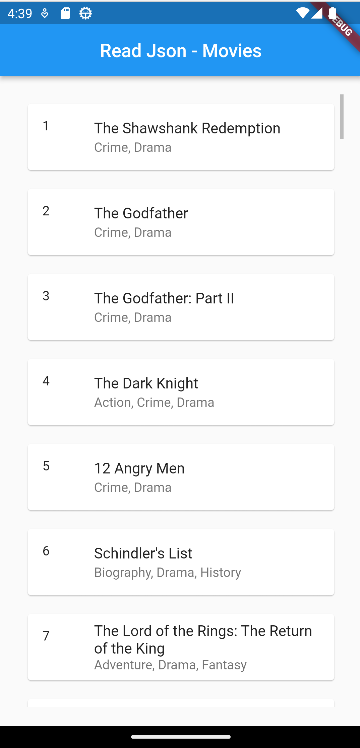
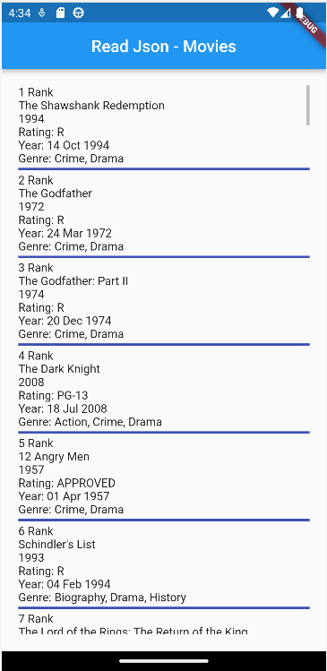

JSON - Read Local JSON File
Overview
This Flutter program is a simple mobile application that loads and displays a list of movies from a local JSON file (movies_array.json). Here’s a brief overview:
- Main Structure:
- The app starts with a main widget (
MyApp), which initializes theHomepagewidget.
- The app starts with a main widget (
- Homepage Widget:
- It contains the main functionality, managing the state of the app.
- It has a list called
_moviesto store the data fetched from the JSON file. - A boolean variable,
buttonVisible, controls the visibility of a button that loads the JSON data.
- Loading JSON Data:
- The
readJson()function is used to read the contents of the JSON file and update the_movieslist. - It uses
setState()to refresh the UI, displaying the loaded movies and hiding the “Load Data” button.
- The
- User Interface:
- The UI consists of an app bar, a “Load Data” button, and a list view to display movie data.
- The movies are displayed using
ListView.builder(), which generates a list ofCardwidgets, each representing a movie.
This app demonstrates how to read local JSON data, manage state, and dynamically update the UI in a Flutter app.
Lecture Code
// fa22_json_movies
// Flutter app to read and display movies from a JSON file
import 'package:flutter/material.dart';
import 'dart:convert';
import 'package:flutter/services.dart';
void main() {
// The main function serves as the entry point for the Flutter app
runApp(const MaterialApp(
home: MyApp(),
));
}
class MyApp extends StatelessWidget {
const MyApp({Key? key}) : super(key: key);
@override
Widget build(BuildContext context) {
// Building the main structure of the app
return const MaterialApp(
debugShowCheckedModeBanner: false, // Hides the debug banner
title: 'Movie List',
home: Homepage(),
);
}
}
class Homepage extends StatefulWidget {
const Homepage({Key? key}) : super(key: key);
@override
HomepageState createState() => HomepageState();
}
class HomepageState extends State<Homepage> {
List _movies = []; // List to store movies fetched from JSON
bool buttonVisible = true; // Controls the visibility of the "Load Data" button
// Function to fetch content from a JSON file
Future<void> readJson() async {
final String response = await rootBundle.loadString("assets/movies_array.json");
final data = await json.decode(response);
setState(() {
_movies = data; // Updates the list with data from JSON
buttonVisible = false; // Hides the "Load Data" button once data is loaded
});
}
@override
Widget build(BuildContext context) {
return Scaffold(
appBar: AppBar(
centerTitle: true,
title: const Text("Read Json - Movies"), // Sets the title of the app bar
),
body: Padding(
padding: const EdgeInsets.all(20),
child: Column(
crossAxisAlignment: CrossAxisAlignment.stretch,
children: [
// Shows the "Load Data" button only if buttonVisible is true
Visibility(
visible: buttonVisible,
child: SizedBox(
width: 100,
child: ElevatedButton(
onPressed: readJson, // Calls the readJson function when pressed
child: const Text('Load Data'),
),
),
),
// Displays the movie list if it's not empty
(_movies.isNotEmpty)
? Expanded(
child: Scrollbar(
interactive: true,
thumbVisibility: true,
child: ListView.builder(
itemCount: _movies.length,
itemBuilder: (context, index) {
// Creates a Card widget for each movie entry
return Card(
margin: const EdgeInsets.all(10),
child: ListTile(
leading: Text(_movies[index][0].toString()), // Movie rank
title: Text(_movies[index][1]), // Movie title
subtitle: Text(_movies[index][6]), // Movie genre
),
);
// Alternative approach using a Container widget
// Column(
// crossAxisAlignment: CrossAxisAlignment.start,
// children: [
// Text("${_movies[index][0]} Rank"),
// Text(_movies[index][1].toString()),
// Text(_movies[index][2].toString()),
// Text("Rating: ${_movies[index][3]}"),
// Text("Year: ${_movies[index][4]}"),
// Text("Genre: ${_movies[index][6]}"),
// const Divider(height: 10, thickness: 3, color: Colors.indigo)
// ],
// );
},
),
),
)
: Column(
// Placeholder column if movie list is empty
crossAxisAlignment: CrossAxisAlignment.center,
children: const [Text("")],
),
],
),
),
);
}
}YAML File
name: fa22_json_movies
description: A new Flutter project.
# The following line prevents the package from being accidentally published to
# pub.dev using `flutter pub publish`. This is preferred for private packages.
publish_to: 'none' # Remove this line if you wish to publish to pub.dev
# In Windows, build-name is used as the major, minor, and patch parts
# of the product and file versions while build-number is used as the build suffix.
version: 1.0.0+1
environment:
sdk: '>=2.18.2 <3.0.0'
# Dependencies specify other packages that your package needs in order to work.
# To automatically upgrade your package dependencies to the latest versions
# consider running `flutter pub upgrade --major-versions`. Alternatively,
# dependencies can be manually updated by changing the version numbers below to
# the latest version available on pub.dev. To see which dependencies have newer
# versions available, run `flutter pub outdated`.
dependencies:
flutter:
sdk: flutter
# The following adds the Cupertino Icons font to your application.
# Use with the CupertinoIcons class for iOS style icons.
cupertino_icons: ^1.0.2
dev_dependencies:
flutter_test:
sdk: flutter
# The "flutter_lints" package below contains a set of recommended lints to
# encourage good coding practices. The lint set provided by the package is
# activated in the `analysis_options.yaml` file located at the root of your
# package. See that file for information about deactivating specific lint
# rules and activating additional ones.
flutter_lints: ^2.0.0
# For information on the generic Dart part of this file, see the
# following page: https://dart.dev/tools/pub/pubspec
# The following section is specific to Flutter packages.
flutter:
# The following line ensures that the Material Icons font is
# included with your application, so that you can use the icons in
# the material Icons class.
uses-material-design: true
# To add assets to your application, add an assets section, like this:
assets:
- assets/movies_array.json
JSON
Save this as movie_array.json
[
[1,"The Shawshank Redemption",1994,"R","14 Oct 1994","142 min","Crime, Drama","Frank Darabont","Stephen King (short story \"Rita Hayworth and Shawshank Redemption\"), Frank Darabont (screenplay)","Tim Robbins, Morgan Freeman, Bob Gunton, William Sadler","Two imprisoned men bond over a number of years, finding solace and eventual redemption through acts of common decency.","English","USA","Nominated for 7 Oscars. Another 19 wins & 30 nominations.","https://images-na.ssl-images-amazon.com/images/M/MV5BODU4MjU4NjIwNl5BMl5BanBnXkFtZTgwMDU2MjEyMDE@._V1_SX300.jpg","Internet Movie Database","9.3/10","80",9.3,"1,825,626","tt0111161","movie","N/A","N/A","N/A","N/A","N/A","N/A","N/A","N/A","N/A","N/A","http://www.rottentomatoes.com/m/shawshank_redemption/","27 Jan 1998","N/A","Columbia Pictures","N/A",true ],
[2,"The Godfather",1972,"R","24 Mar 1972","175 min","Crime, Drama","Francis Ford Coppola","Mario Puzo (screenplay), Francis Ford Coppola (screenplay), Mario Puzo (novel)","Marlon Brando, Al Pacino, James Caan, Richard S. Castellano","The aging patriarch of an organized crime dynasty transfers control of his clandestine empire to his reluctant son.","English, Italian, Latin","USA","Won 3 Oscars. Another 23 wins & 27 nominations.","https://images-na.ssl-images-amazon.com/images/M/MV5BZTRmNjQ1ZDYtNDgzMy00OGE0LWE4N2YtNTkzNWQ5ZDhlNGJmL2ltYWdlL2ltYWdlXkEyXkFqcGdeQXVyNjU0OTQ0OTY@._V1_SX300.jpg","Internet Movie Database","9.2/10","100",9.2,"1,243,444","tt0068646","movie","N/A","N/A","N/A","N/A","N/A","N/A","N/A","N/A","N/A","N/A","http://www.rottentomatoes.com/m/godfather/","09 Oct 2001","N/A","Paramount Pictures","http://www.thegodfather.com",true ],
[3,"The Godfather: Part II",1974,"R","20 Dec 1974","202 min","Crime, Drama","Francis Ford Coppola","Francis Ford Coppola (screenplay), Mario Puzo (screenplay), Mario Puzo (novel)","Al Pacino, Robert Duvall, Diane Keaton, Robert De Niro","The early life and career of Vito Corleone in 1920s New York is portrayed while his son, Michael, expands and tightens his grip on the family crime syndicate.","English, Italian, Spanish, Latin, Sicilian","USA","Won 6 Oscars. Another 10 wins & 20 nominations.","https://images-na.ssl-images-amazon.com/images/M/MV5BMjZiNzIxNTQtNDc5Zi00YWY1LThkMTctMDgzYjY4YjI1YmQyL2ltYWdlL2ltYWdlXkEyXkFqcGdeQXVyNjU0OTQ0OTY@._V1_SX300.jpg","Internet Movie Database","9.0/10","85",9,"856,870","tt0071562","movie","N/A","N/A","N/A","N/A","N/A","N/A","N/A","N/A","N/A","N/A","http://www.rottentomatoes.com/m/godfather_part_ii/","24 May 2005","N/A","Paramount Pictures","http://www.thegodfather.com/",true ],
[4,"The Dark Knight",2008,"PG-13","18 Jul 2008","152 min","Action, Crime, Drama","Christopher Nolan","Jonathan Nolan (screenplay), Christopher Nolan (screenplay), Christopher Nolan (story), David S. Goyer (story), Bob Kane (characters)","Christian Bale, Heath Ledger, Aaron Eckhart, Michael Caine","When the menace known as the Joker emerges from his mysterious past, he wreaks havoc and chaos on the people of Gotham, the Dark Knight must accept one of the greatest psychological and physical tests of his ability to fight injustice.","English, Mandarin","USA, UK","Won 2 Oscars. Another 151 wins & 153 nominations.","https://images-na.ssl-images-amazon.com/images/M/MV5BMTMxNTMwODM0NF5BMl5BanBnXkFtZTcwODAyMTk2Mw@@._V1_SX300.jpg","Internet Movie Database","9.0/10","82",9,"1,802,351","tt0468569","movie","N/A","N/A","N/A","N/A","N/A","N/A","N/A","N/A","N/A","N/A","http://www.rottentomatoes.com/m/the_dark_knight/","09 Dec 2008","$533,316,061","Warner Bros. Pictures/Legendary","http://thedarkknight.warnerbros.com/",true ],
[5,"12 Angry Men",1957,"APPROVED","01 Apr 1957","96 min","Crime, Drama","Sidney Lumet","Reginald Rose (story), Reginald Rose (screenplay)","Martin Balsam, John Fiedler, Lee J. Cobb, E.G. Marshall","A jury holdout attempts to prevent a miscarriage of justice by forcing his colleagues to reconsider the evidence.","English","USA","Nominated for 3 Oscars. Another 16 wins & 8 nominations.","https://images-na.ssl-images-amazon.com/images/M/MV5BODQwOTc5MDM2N15BMl5BanBnXkFtZTcwODQxNTEzNA@@._V1_SX300.jpg","Internet Movie Database","8.9/10","96",8.9,"494,215","tt0050083","movie","N/A","N/A","N/A","N/A","N/A","N/A","N/A","N/A","N/A","N/A","http://www.rottentomatoes.com/m/1000013-12_angry_men/","06 Mar 2001","N/A","Criterion Collection","http://www.criterion.com/films/27871-12-angry-men",true ],
[6,"Schindler's List",1993,"R","04 Feb 1994","195 min","Biography, Drama, History","Steven Spielberg","Thomas Keneally (book), Steven Zaillian (screenplay)","Liam Neeson, Ben Kingsley, Ralph Fiennes, Caroline Goodall","In German-occupied Poland during World War II, Oskar Schindler gradually becomes concerned for his Jewish workforce after witnessing their persecution by the Nazi Germans.","English, Hebrew, German, Polish","USA","Won 7 Oscars. Another 71 wins & 33 nominations.","https://images-na.ssl-images-amazon.com/images/M/MV5BNDE4OTMxMTctNmRhYy00NWE2LTg3YzItYTk3M2UwOTU5Njg4XkEyXkFqcGdeQXVyNjU0OTQ0OTY@._V1_SX300.jpg","Internet Movie Database","8.9/10","93",8.9,"937,837","tt0108052","movie","N/A","N/A","N/A","N/A","N/A","N/A","N/A","N/A","N/A","N/A","http://www.rottentomatoes.com/m/schindlers_list/","09 Mar 2004","N/A","Universal Pictures","http://www.schindlerslist.com",true ],
[7,"The Lord of the Rings: The Return of the King",2003,"PG-13","17 Dec 2003","201 min","Adventure, Drama, Fantasy","Peter Jackson","J.R.R. Tolkien (novel), Fran Walsh (screenplay), Philippa Boyens (screenplay), Peter Jackson (screenplay)","Noel Appleby, Ali Astin, Sean Astin, David Aston","Gandalf and Aragorn lead the World of Men against Sauron's army to draw his gaze from Frodo and Sam as they approach Mount Doom with the One Ring.","English, Quenya, Old English, Sindarin","USA, New Zealand","Won 11 Oscars. Another 197 wins & 122 nominations.","https://images-na.ssl-images-amazon.com/images/M/MV5BYWY1ZWQ5YjMtMDE0MS00NWIzLWE1M2YtODYzYTk2OTNlYWZmXkEyXkFqcGdeQXVyNDUyOTg3Njg@._V1_SX300.jpg","Internet Movie Database","8.9/10","94",8.9,"1,304,569","tt0167260","movie","N/A","N/A","N/A","N/A","N/A","N/A","N/A","N/A","N/A","N/A","http://www.rottentomatoes.com/m/the_lord_of_the_rings_the_return_of_the_king/","25 May 2004","$364,000,000","New Line Cinema","http://www.lordoftherings.net/",true ],
[8,"Pulp Fiction",1994,"R","14 Oct 1994","154 min","Crime, Drama","Quentin Tarantino","Quentin Tarantino (stories), Roger Avary (stories), Quentin Tarantino","Tim Roth, Amanda Plummer, Laura Lovelace, John Travolta","The lives of two mob hit men, a boxer, a gangster's wife, and a pair of diner bandits intertwine in four tales of violence and redemption.","English, Spanish, French","USA","Won 1 Oscar. Another 60 wins & 68 nominations.","https://images-na.ssl-images-amazon.com/images/M/MV5BMTkxMTA5OTAzMl5BMl5BanBnXkFtZTgwNjA5MDc3NjE@._V1_SX300.jpg","Internet Movie Database","8.9/10","94",8.9,"1,427,451","tt0110912","movie","N/A","N/A","N/A","N/A","N/A","N/A","N/A","N/A","N/A","N/A","http://www.rottentomatoes.com/m/pulp_fiction/","19 May 1998","N/A","Miramax Films","N/A",true ],
[9,"Fight Club",1999,"R","15 Oct 1999","139 min","Drama","David Fincher","Chuck Palahniuk (novel), Jim Uhls (screenplay)","Edward Norton, Brad Pitt, Meat Loaf, Zach Grenier","An insomniac office worker, looking for a way to change his life, crosses paths with a devil-may-care soap maker, forming an underground fight club that evolves into something much, much more.","English","USA, Germany","Nominated for 1 Oscar. Another 10 wins & 31 nominations.","https://images-na.ssl-images-amazon.com/images/M/MV5BZGY5Y2RjMmItNDg5Yy00NjUwLThjMTEtNDc2OGUzNTBiYmM1XkEyXkFqcGdeQXVyNjU0OTQ0OTY@._V1_SX300.jpg","Internet Movie Database","8.8/10","66",8.8,"1,458,676","tt0137523","movie","N/A","N/A","N/A","N/A","N/A","N/A","N/A","N/A","N/A","N/A","http://www.rottentomatoes.com/m/fight_club/","06 Jun 2000","N/A","20th Century Fox","http://www.foxmovies.com/fightclub/",true ],
[10,"The Lord of the Rings: The Fellowship of the Ring",2001,"PG-13","19 Dec 2001","178 min","Adventure, Drama, Fantasy","Peter Jackson","J.R.R. Tolkien (novel), Fran Walsh (screenplay), Philippa Boyens (screenplay), Peter Jackson (screenplay)","Alan Howard, Noel Appleby, Sean Astin, Sala Baker","A meek Hobbit from the Shire and eight companions set out on a journey to destroy the powerful One Ring and save Middle Earth from the Dark Lord Sauron.","English, Sindarin","New Zealand, USA","Won 4 Oscars. Another 113 wins & 124 nominations.","https://images-na.ssl-images-amazon.com/images/M/MV5BN2EyZjM3NzUtNWUzMi00MTgxLWI0NTctMzY4M2VlOTdjZWRiXkEyXkFqcGdeQXVyNDUzOTQ5MjY@._V1_SX300.jpg","Internet Movie Database","8.8/10","92",8.8,"1,326,876","tt0120737","movie","N/A","N/A","N/A","N/A","N/A","N/A","N/A","N/A","N/A","N/A","http://www.rottentomatoes.com/m/the_lord_of_the_rings_the_fellowship_of_the_ring/","06 Aug 2002","$314,000,000","New Line Cinema","http://www.lordoftherings.net/film/trilogy/thefellowship.html",true ],
[11,"Forrest Gump",1994,"PG-13","06 Jul 1994","142 min","Comedy, Drama, Romance","Robert Zemeckis","Winston Groom (novel), Eric Roth (screenplay)","Tom Hanks, Rebecca Williams, Sally Field, Michael Conner Humphreys","While not intelligent, Forrest Gump has accidentally been present at many historic moments, but his true love, Jenny Curran, eludes him.","English","USA","Won 6 Oscars. Another 39 wins & 66 nominations.","https://images-na.ssl-images-amazon.com/images/M/MV5BYThjM2MwZGMtMzg3Ny00NGRkLWE4M2EtYTBiNWMzOTY0YTI4XkEyXkFqcGdeQXVyNDYyMDk5MTU@._V1_SX300.jpg","Internet Movie Database","8.8/10","82",8.8,"1,365,937","tt0109830","movie","N/A","N/A","N/A","N/A","N/A","N/A","N/A","N/A","N/A","N/A","http://www.rottentomatoes.com/m/forrest_gump/","28 Aug 2001","$405,000","Paramount Pictures","http://www.paramount.com/movies/forrest-gump/",true ],
[12,"Star Wars: Episode V - The Empire Strikes Back",1980,"PG","20 Jun 1980","124 min","Action, Adventure, Fantasy","Irvin Kershner","Leigh Brackett (screenplay), Lawrence Kasdan (screenplay), George Lucas (story by)","Mark Hamill, Harrison Ford, Carrie Fisher, Billy Dee Williams","After the rebels are overpowered by the Empire on their newly established base, Luke Skywalker begins Jedi training with Master Yoda. His friends accept shelter from a questionable ally as Darth Vader hunts them in a plan to capture Luke.","English","USA","Won 1 Oscar. Another 21 wins & 19 nominations.","https://images-na.ssl-images-amazon.com/images/M/MV5BYmViY2M2MTYtY2MzOS00YjQ1LWIzYmEtOTBiNjhlMGM0NjZjXkEyXkFqcGdeQXVyNDYyMDk5MTU@._V1_SX300.jpg","Internet Movie Database","8.8/10","81",8.8,"910,608","tt0080684","movie","N/A","N/A","N/A","N/A","N/A","N/A","N/A","N/A","N/A","N/A","http://www.rottentomatoes.com/m/empire_strikes_back/","21 Sep 2004","$4,548,170","Twentieth Century Fox","http://www.starwars.com/episode-v/",true ],
[13,"Inception",2010,"PG-13","16 Jul 2010","148 min","Action, Adventure, Sci-Fi","Christopher Nolan","Christopher Nolan","Leonardo DiCaprio, Joseph Gordon-Levitt, Ellen Page, Tom Hardy","A thief, who steals corporate secrets through use of dream-sharing technology, is given the inverse task of planting an idea into the mind of a CEO.","English, Japanese, French","USA, UK","Won 4 Oscars. Another 150 wins & 203 nominations.","https://images-na.ssl-images-amazon.com/images/M/MV5BMjAxMzY3NjcxNF5BMl5BanBnXkFtZTcwNTI5OTM0Mw@@._V1_SX300.jpg","Internet Movie Database","8.8/10","74",8.8,"1,592,306","tt1375666","movie","N/A","N/A","N/A","N/A","N/A","N/A","N/A","N/A","N/A","N/A","http://www.rottentomatoes.com/m/inception/","07 Dec 2010","$292,568,851","Warner Bros. Pictures","http://inceptionmovie.warnerbros.com/",true ],
[14,"The Lord of the Rings: The Two Towers",2002,"PG-13","18 Dec 2002","179 min","Adventure, Drama, Fantasy","Peter Jackson","J.R.R. Tolkien (novel), Fran Walsh (screenplay), Philippa Boyens (screenplay), Stephen Sinclair (screenplay), Peter Jackson (screenplay)","Bruce Allpress, Sean Astin, John Bach, Sala Baker","While Frodo and Sam edge closer to Mordor with the help of the shifty Gollum, the divided fellowship makes a stand against Sauron's new ally, Saruman, and his hordes of Isengard.","English, Sindarin, Old English","USA, New Zealand","Won 2 Oscars. Another 118 wins & 138 nominations.","https://images-na.ssl-images-amazon.com/images/M/MV5BMDY0NmI4ZjctN2VhZS00YzExLTkyZGItMTJhOTU5NTg4MDU4XkEyXkFqcGdeQXVyNjU0OTQ0OTY@._V1_SX300.jpg","Internet Movie Database","8.7/10","88",8.7,"1,188,300","tt0167261","movie","N/A","N/A","N/A","N/A","N/A","N/A","N/A","N/A","N/A","N/A","http://www.rottentomatoes.com/m/the_lord_of_the_rings_the_two_towers/","26 Aug 2003","$339,700,000","New Line Cinema","http://www.lordoftherings.net/",true ],
[15,"One Flew Over the Cuckoo's Nest",1975,"R","19 Nov 1975","133 min","Drama","Milos Forman","Lawrence Hauben (screenplay), Bo Goldman (screenplay), Ken Kesey (based on the novel by), Dale Wasserman (the play version: \"One Flew Over the Cuckoo's Nest\" by)","Michael Berryman, Peter Brocco, Dean R. Brooks, Alonzo Brown","A criminal pleads insanity after getting into trouble again and once in the mental institution rebels against the oppressive nurse and rallies up the scared patients.","English","USA","Won 5 Oscars. Another 30 wins & 13 nominations.","https://images-na.ssl-images-amazon.com/images/M/MV5BZjA0OWVhOTAtYWQxNi00YzNhLWI4ZjYtNjFjZTEyYjJlNDVlL2ltYWdlL2ltYWdlXkEyXkFqcGdeQXVyMTQxNzMzNDI@._V1_SX300.jpg","Internet Movie Database","8.7/10","80",8.7,"729,653","tt0073486","movie","N/A","N/A","N/A","N/A","N/A","N/A","N/A","N/A","N/A","N/A","http://www.rottentomatoes.com/m/one_flew_over_the_cuckoos_nest/","09 Dec 1997","N/A","United Artists","N/A",true ],
[16,"Goodfellas",1990,"R","21 Sep 1990","146 min","Crime, Drama","Martin Scorsese","Nicholas Pileggi (book), Nicholas Pileggi (screenplay), Martin Scorsese (screenplay)","Robert De Niro, Ray Liotta, Joe Pesci, Lorraine Bracco","The story of Henry Hill and his life through the teen years into the years of mafia, covering his relationship with wife Karen Hill and his Mob partners Jimmy Conway and Tommy DeVitto in the Italian-American crime syndicate.","English, Italian","USA","Won 1 Oscar. Another 37 wins & 35 nominations.","https://images-na.ssl-images-amazon.com/images/M/MV5BNThjMzczMjctZmIwOC00NTQ4LWJhZWItZDdhNTk5ZTdiMWFlXkEyXkFqcGdeQXVyNDYyMDk5MTU@._V1_SX300.jpg","Internet Movie Database","8.7/10","89",8.7,"787,997","tt0099685","movie","N/A","N/A","N/A","N/A","N/A","N/A","N/A","N/A","N/A","N/A","http://www.rottentomatoes.com/m/1032176-goodfellas/","26 Mar 1997","N/A","Warner Bros.","N/A",true ],
[17,"The Matrix",1999,"R","31 Mar 1999","136 min","Action, Sci-Fi","Lana Wachowski, Lilly Wachowski","Lilly Wachowski, Lana Wachowski","Keanu Reeves, Laurence Fishburne, Carrie-Anne Moss, Hugo Weaving","A computer hacker learns from mysterious rebels about the true nature of his reality and his role in the war against its controllers.","English","USA","Won 4 Oscars. Another 34 wins & 45 nominations.","https://images-na.ssl-images-amazon.com/images/M/MV5BNzQzOTk3OTAtNDQ0Zi00ZTVkLWI0MTEtMDllZjNkYzNjNTc4L2ltYWdlXkEyXkFqcGdeQXVyNjU0OTQ0OTY@._V1_SX300.jpg","Internet Movie Database","8.7/10","73",8.7,"1,314,628","tt0133093","movie","N/A","N/A","N/A","N/A","N/A","N/A","N/A","N/A","N/A","N/A","http://www.rottentomatoes.com/m/matrix/","21 Sep 1999","N/A","Warner Bros. Pictures","http://www.whatisthematrix.com",true ],
[18,"Star Wars: Episode IV - A New Hope",1977,"PG","25 May 1977","121 min","Action, Adventure, Fantasy","George Lucas","George Lucas","Mark Hamill, Harrison Ford, Carrie Fisher, Peter Cushing","Luke Skywalker joins forces with a Jedi Knight, a cocky pilot, a wookiee and two droids to save the galaxy from the Empire's world-destroying battle-station, while also attempting to rescue Princess Leia from the evil Darth Vader.","English","USA","Won 6 Oscars. Another 50 wins & 28 nominations.","https://images-na.ssl-images-amazon.com/images/M/MV5BYzQ2OTk4N2QtOGQwNy00MmI3LWEwNmEtOTk0OTY3NDk2MGJkL2ltYWdlL2ltYWdlXkEyXkFqcGdeQXVyNjc1NTYyMjg@._V1_SX300.jpg","Internet Movie Database","8.7/10","92",8.7,"982,688","tt0076759","movie","N/A","N/A","N/A","N/A","N/A","N/A","N/A","N/A","N/A","N/A","http://www.rottentomatoes.com/m/star_wars/","21 Sep 2004","N/A","20th Century Fox","http://www.starwars.com/episode-iv/",true ],
[19,"Se7en",1995,"R","22 Sep 1995","127 min","Crime, Drama, Mystery","David Fincher","Andrew Kevin Walker","Morgan Freeman, Andrew Kevin Walker, Kevin Spacey, Daniel Zacapa","Two detectives, a rookie and a veteran, hunt a serial killer who uses the seven deadly sins as his motives.","English","USA","Nominated for 1 Oscar. Another 25 wins & 34 nominations.","https://images-na.ssl-images-amazon.com/images/M/MV5BOTUwODM5MTctZjczMi00OTk4LTg3NWUtNmVhMTAzNTNjYjcyXkEyXkFqcGdeQXVyNjU0OTQ0OTY@._V1_SX300.jpg","Internet Movie Database","8.6/10","65",8.6,"1,108,627","tt0114369","movie","N/A","N/A","N/A","N/A","N/A","N/A","N/A","N/A","N/A","N/A","http://www.rottentomatoes.com/m/seven/","14 Apr 1997","N/A","New Line Cinema","N/A",true ],
[20,"It's a Wonderful Life",1946,"PG","07 Jan 1947","130 min","Drama, Family, Fantasy","Frank Capra","Frances Goodrich (screenplay), Albert Hackett (screenplay), Frank Capra (screenplay), Jo Swerling (additional scenes), Philip Van Doren Stern (story)","James Stewart, Donna Reed, Lionel Barrymore, Thomas Mitchell","An angel is sent from Heaven to help a desperately frustrated businessman by showing him what life would have been like if he had never existed.","English","USA","Nominated for 5 Oscars. Another 6 wins & 1 nomination.","https://images-na.ssl-images-amazon.com/images/M/MV5BMTMzMzY5NDc4M15BMl5BanBnXkFtZTcwMzc4NjIxNw@@._V1_SX300.jpg","Internet Movie Database","8.6/10","89",8.6,"301,614","tt0038650","movie","N/A","N/A","N/A","N/A","N/A","N/A","N/A","N/A","N/A","N/A","http://www.rottentomatoes.com/m/1010792-its_a_wonderful_life/","19 Sep 1995","N/A","Liberty Films","N/A",true ],
[21,"The Silence of the Lambs",1991,"R","14 Feb 1991","118 min","Crime, Drama, Thriller","Jonathan Demme","Thomas Harris (novel), Ted Tally (screenplay)","Jodie Foster, Lawrence A. Bonney, Kasi Lemmons, Lawrence T. Wrentz","A young F.B.I. cadet must confide in an incarcerated and manipulative killer to receive his help on catching another serial killer who skins his victims.","English","USA","Won 5 Oscars. Another 49 wins & 37 nominations.","https://images-na.ssl-images-amazon.com/images/M/MV5BNjNhZTk0ZmEtNjJhMi00YzFlLWE1MmEtYzM1M2ZmMGMwMTU4XkEyXkFqcGdeQXVyNjU0OTQ0OTY@._V1_SX300.jpg","Internet Movie Database","8.6/10","84",8.6,"967,878","tt0102926","movie","N/A","N/A","N/A","N/A","N/A","N/A","N/A","N/A","N/A","N/A","http://www.rottentomatoes.com/m/silence_of_the_lambs/","01 Jul 1998","N/A","Orion Pictures Corporation","N/A",true ],
[22,"The Usual Suspects",1995,"R","15 Sep 1995","106 min","Crime, Drama, Mystery","Bryan Singer","Christopher McQuarrie","Stephen Baldwin, Gabriel Byrne, Benicio Del Toro, Kevin Pollak","A sole survivor tells of the twisty events leading up to a horrific gun battle on a boat, which began when five criminals met at a seemingly random police lineup.","English, Hungarian, Spanish, French","USA, Germany","Won 2 Oscars. Another 32 wins & 16 nominations.","https://images-na.ssl-images-amazon.com/images/M/MV5BYTViNjMyNmUtNDFkNC00ZDRlLThmMDUtZDU2YWE4NGI2ZjVmXkEyXkFqcGdeQXVyNjU0OTQ0OTY@._V1_SX300.jpg","Internet Movie Database","8.6/10","77",8.6,"797,545","tt0114814","movie","N/A","N/A","N/A","N/A","N/A","N/A","N/A","N/A","N/A","N/A","http://www.rottentomatoes.com/m/usual_suspects/","09 Dec 1999","N/A","Gramercy Pictures","N/A",true ],
[23,"Léon: The Professional",1994,"R","18 Nov 1994","110 min","Crime, Drama, Thriller","Luc Besson","Luc Besson","Jean Reno, Gary Oldman, Natalie Portman, Danny Aiello","Mathilda, a 12-year-old girl, is reluctantly taken in by Léon, a professional assassin, after her family is murdered. Léon and Mathilda form an unusual relationship, as she becomes his protégée and learns the assassin's trade.","English, Italian, French","France","5 wins & 11 nominations.","https://images-na.ssl-images-amazon.com/images/M/MV5BMjdjMGU3MGYtN2Y5ZC00MTE4LWE4YWQtMTBhMjc3MTk0ZDUwXkEyXkFqcGdeQXVyNjU0OTQ0OTY@._V1_SX300.jpg","Internet Movie Database","8.6/10","64",8.6,"787,281","tt0110413","movie","N/A","N/A","N/A","N/A","N/A","N/A","N/A","N/A","N/A","N/A","http://www.rottentomatoes.com/m/leon_the_professional/","15 Aug 2000","N/A","Columbia Pictures","N/A",true ],
[24,"Saving Private Ryan",1998,"R","24 Jul 1998","169 min","Drama, War","Steven Spielberg","Robert Rodat","Tom Hanks, Tom Sizemore, Edward Burns, Barry Pepper","Following the Normandy Landings, a group of U.S. soldiers go behind enemy lines to retrieve a paratrooper whose brothers have been killed in action.","English, French, German, Czech","USA","Won 5 Oscars. Another 74 wins & 74 nominations.","https://images-na.ssl-images-amazon.com/images/M/MV5BZjhkMDM4MWItZTVjOC00ZDRhLThmYTAtM2I5NzBmNmNlMzI1XkEyXkFqcGdeQXVyNDYyMDk5MTU@._V1_SX300.jpg","Internet Movie Database","8.6/10","90",8.6,"960,639","tt0120815","movie","N/A","N/A","N/A","N/A","N/A","N/A","N/A","N/A","N/A","N/A","http://www.rottentomatoes.com/m/saving_private_ryan/","02 Nov 1999","N/A","Paramount Pictures","http://https://www.facebook.com/SavingPrivateRyanMovie",true ],
[25,"City Lights",1931,"G","07 Mar 1931","87 min","Comedy, Drama, Romance","Charles Chaplin","Charles Chaplin","Virginia Cherrill, Florence Lee, Harry Myers, Al Ernest Garcia","With the aid of a wealthy erratic tippler, a dewy-eyed tramp who has fallen in love with a sightless flower girl accumulates money to be able to help her medically.","English","USA","3 wins.","https://images-na.ssl-images-amazon.com/images/M/MV5BZDRjMmI3ZjgtMGE3Mi00NjY5LTg0NWMtMmU3YzgyMjhmMjIzL2ltYWdlXkEyXkFqcGdeQXVyNTAyODkwOQ@@._V1_SX300.jpg","Internet Movie Database","8.6/10","N/A",8.6,"119,453","tt0021749","movie","N/A","N/A","N/A","N/A","N/A","N/A","N/A","N/A","N/A","N/A","http://www.rottentomatoes.com/m/city_lights/","08 Feb 2000","N/A","Twentieth Century Fox Home Entertainment","N/A",true ],
[26,"Interstellar",2014,"PG-13","07 Nov 2014","169 min","Adventure, Drama, Sci-Fi","Christopher Nolan","Jonathan Nolan, Christopher Nolan","Ellen Burstyn, Matthew McConaughey, Mackenzie Foy, John Lithgow","A team of explorers travel through a wormhole in space in an attempt to ensure humanity's survival.","English","USA, UK, Canada, Iceland","Won 1 Oscar. Another 41 wins & 142 nominations.","https://images-na.ssl-images-amazon.com/images/M/MV5BMjIxNTU4MzY4MF5BMl5BanBnXkFtZTgwMzM4ODI3MjE@._V1_SX300.jpg","Internet Movie Database","8.6/10","74",8.6,"1,057,411","tt0816692","movie","N/A","N/A","N/A","N/A","N/A","N/A","N/A","N/A","N/A","N/A","http://www.rottentomatoes.com/m/interstellar_2014/","31 Mar 2015","$158,737,441","Paramount Pictures","http://www.InterstellarMovie.com/",true ],
[27,"American History X",1998,"R","20 Nov 1998","119 min","Crime, Drama","Tony Kaye","David McKenna","Edward Norton, Edward Furlong, Beverly D'Angelo, Jennifer Lien","A former neo-nazi skinhead tries to prevent his younger brother from going down the same wrong path that he did.","English","USA","Nominated for 1 Oscar. Another 4 wins & 13 nominations.","https://images-na.ssl-images-amazon.com/images/M/MV5BZjA0MTM4MTQtNzY5MC00NzY3LWI1ZTgtYzcxMjkyMzU4MDZiXkEyXkFqcGdeQXVyNDYyMDk5MTU@._V1_SX300.jpg","Internet Movie Database","8.5/10","62",8.5,"843,128","tt0120586","movie","N/A","N/A","N/A","N/A","N/A","N/A","N/A","N/A","N/A","N/A","http://www.rottentomatoes.com/m/american_history_x/","06 Apr 1999","N/A","New Line Cinema","http://www.historyx.com",true ],
[28,"Modern Times",1936,"G","25 Feb 1936","87 min","Comedy, Drama, Family","Charles Chaplin","Charles Chaplin","Charles Chaplin, Paulette Goddard, Henry Bergman, Tiny Sandford","The Tramp struggles to live in modern industrial society with the help of a young homeless woman.","English","USA","4 wins & 1 nomination.","https://images-na.ssl-images-amazon.com/images/M/MV5BYjJiZjMzYzktNjU0NS00OTkxLWEwYzItYzdhYWJjN2QzMTRlL2ltYWdlL2ltYWdlXkEyXkFqcGdeQXVyNjU0OTQ0OTY@._V1_SX300.jpg","Internet Movie Database","8.5/10","96",8.5,"158,254","tt0027977","movie","N/A","N/A","N/A","N/A","N/A","N/A","N/A","N/A","N/A","N/A","http://www.rottentomatoes.com/m/modern_times/","23 Aug 2010","N/A","United Artists","http://www.kino.com/moderntimes",true ],
[29,"Casablanca",1942,"PG","23 Jan 1943","102 min","Drama, Romance, War","Michael Curtiz","Julius J. Epstein (screenplay), Philip G. Epstein (screenplay), Howard Koch (screenplay), Murray Burnett (play), Joan Alison (play)","Humphrey Bogart, Ingrid Bergman, Paul Henreid, Claude Rains","In Casablanca in December 1941, a cynical American expatriate encounters a former lover, with unforeseen complications.","English, French, German, Italian","USA","Won 3 Oscars. Another 5 wins & 8 nominations.","https://images-na.ssl-images-amazon.com/images/M/MV5BY2IzZGY2YmEtYzljNS00NTM5LTgwMzUtMzM1NjQ4NGI0OTk0XkEyXkFqcGdeQXVyNDYyMDk5MTU@._V1_SX300.jpg","Internet Movie Database","8.5/10","100",8.5,"415,400","tt0034583","movie","N/A","N/A","N/A","N/A","N/A","N/A","N/A","N/A","N/A","N/A","http://www.rottentomatoes.com/m/1003707-casablanca/","15 Feb 2000","N/A","Warner Bros. Pictures","http://www.FathomEvents.com",true ],
[30,"The Green Mile",1999,"R","10 Dec 1999","189 min","Crime, Drama, Fantasy","Frank Darabont","Stephen King (novel), Frank Darabont (screenplay)","Tom Hanks, David Morse, Michael Clarke Duncan, Bonnie Hunt","The lives of guards on Death Row are affected by one of their charges: a black man accused of child murder and rape, yet who has a mysterious gift.","English, French","USA","Nominated for 4 Oscars. Another 15 wins & 30 nominations.","https://images-na.ssl-images-amazon.com/images/M/MV5BMTUxMzQyNjA5MF5BMl5BanBnXkFtZTYwOTU2NTY3._V1_SX300.jpg","Internet Movie Database","8.5/10","61",8.5,"857,527","tt0120689","movie","N/A","N/A","N/A","N/A","N/A","N/A","N/A","N/A","N/A","N/A","http://www.rottentomatoes.com/m/green_mile/","13 Jun 2000","N/A","Warner Bros. Pictures","http://www.thegreenmile.com",true ],
[31,"Psycho",1960,"APPROVED","08 Sep 1960","109 min","Horror, Mystery, Thriller","Alfred Hitchcock","Joseph Stefano (screenplay), Robert Bloch (novel)","Anthony Perkins, Vera Miles, John Gavin, Janet Leigh","A Phoenix secretary embezzles $40,000 from her employer's client, goes on the run, and checks into a remote motel run by a young man under the domination of his mother.","English","USA","Nominated for 4 Oscars. Another 5 wins & 9 nominations.","https://images-na.ssl-images-amazon.com/images/M/MV5BOWQ0MjRmZmUtY2Q2Yi00ODcxLWE4NGMtMTNjMDY1YmUzMjVkXkEyXkFqcGdeQXVyNjc1NTYyMjg@._V1_SX300.jpg","Internet Movie Database","8.5/10","97",8.5,"458,316","tt0054215","movie","N/A","N/A","N/A","N/A","N/A","N/A","N/A","N/A","N/A","N/A","http://www.rottentomatoes.com/m/psycho/","06 Mar 2001","N/A","Paramount Pictures","N/A",true ],
[32,"Raiders of the Lost Ark",1981,"PG","12 Jun 1981","115 min","Action, Adventure","Steven Spielberg","Lawrence Kasdan (screenplay), George Lucas (story by), Philip Kaufman (story by)","Harrison Ford, Karen Allen, Paul Freeman, Ronald Lacey","Archaeologist and adventurer Indiana Jones is hired by the U.S. government to find the Ark of the Covenant before the Nazis.","English, German, Hebrew, Spanish, Arabic, Nepali","USA","Won 4 Oscars. Another 30 wins & 23 nominations.","https://images-na.ssl-images-amazon.com/images/M/MV5BMjA0ODEzMTc1Nl5BMl5BanBnXkFtZTcwODM2MjAxNA@@._V1_SX300.jpg","Internet Movie Database","8.5/10","85",8.5,"709,587","tt0082971","movie","N/A","N/A","N/A","N/A","N/A","N/A","N/A","N/A","N/A","N/A","http://www.rottentomatoes.com/m/raiders_of_the_lost_ark/","21 Oct 2003","N/A","Paramount Pictures","http://www.indianajones.com/raiders/",true ],
[33,"The Pianist",2002,"R","28 Mar 2003","150 min","Biography, Drama, Music","Roman Polanski","Ronald Harwood (screenplay), Wladyslaw Szpilman (book)","Adrien Brody, Emilia Fox, Michal Zebrowski, Ed Stoppard","A Polish Jewish musician struggles to survive the destruction of the Warsaw ghetto of World War II.","English, German, Russian","France, Poland, Germany, UK","Won 3 Oscars. Another 51 wins & 72 nominations.","https://images-na.ssl-images-amazon.com/images/M/MV5BOWRiZDIxZjktMTA1NC00MDQ2LWEzMjUtMTliZmY3NjQ3ODJiXkEyXkFqcGdeQXVyNjU0OTQ0OTY@._V1_SX300.jpg","Internet Movie Database","8.5/10","85",8.5,"547,383","tt0253474","movie","N/A","N/A","N/A","N/A","N/A","N/A","N/A","N/A","N/A","N/A","http://www.rottentomatoes.com/m/pianist/","27 May 2003","$32,519,322","Focus Features","http://www.thepianistmovie.com/",true ],
[34,"Rear Window",1954,"APPROVED","01 Sep 1954","112 min","Mystery, Thriller","Alfred Hitchcock","John Michael Hayes (screenplay), Cornell Woolrich (based on the short story by)","James Stewart, Grace Kelly, Wendell Corey, Thelma Ritter","A wheelchair-bound photographer spies on his neighbours from his apartment window and becomes convinced one of them has committed murder.","English","USA","Nominated for 4 Oscars. Another 6 wins & 8 nominations.","https://images-na.ssl-images-amazon.com/images/M/MV5BNGUxYWM3M2MtMGM3Mi00ZmRiLWE0NGQtZjE5ODI2OTJhNTU0XkEyXkFqcGdeQXVyMTQxNzMzNDI@._V1_SX300.jpg","Internet Movie Database","8.5/10","N/A",8.5,"342,023","tt0047396","movie","N/A","N/A","N/A","N/A","N/A","N/A","N/A","N/A","N/A","N/A","http://www.rottentomatoes.com/m/1017289-rear_window/","06 Mar 2001","N/A","Paramount Pictures","N/A",true ],
[35,"The Departed",2006,"R","06 Oct 2006","151 min","Crime, Drama, Thriller","Martin Scorsese","William Monahan (screenplay), Alan Mak, Felix Chong","Leonardo DiCaprio, Matt Damon, Jack Nicholson, Mark Wahlberg","An undercover cop and a mole in the police attempt to identify each other while infiltrating an Irish gang in South Boston.","English, Cantonese","USA, Hong Kong","Won 4 Oscars. Another 92 wins & 134 nominations.","https://images-na.ssl-images-amazon.com/images/M/MV5BMTI1MTY2OTIxNV5BMl5BanBnXkFtZTYwNjQ4NjY3._V1_SX300.jpg","Internet Movie Database","8.5/10","85",8.5,"943,314","tt0407887","movie","N/A","N/A","N/A","N/A","N/A","N/A","N/A","N/A","N/A","N/A","http://www.rottentomatoes.com/m/departed/","13 Feb 2007","$132,300,000","Warner Bros. Pictures","http://www.thedeparted.com/",true ],
[36,"Whiplash",2014,"R","15 Oct 2014","107 min","Drama, Music","Damien Chazelle","Damien Chazelle","Miles Teller, J.K. Simmons, Paul Reiser, Melissa Benoist","A promising young drummer enrolls at a cut-throat music conservatory where his dreams of greatness are mentored by an instructor who will stop at nothing to realize a student's potential.","English","USA","Won 3 Oscars. Another 88 wins & 135 nominations.","https://images-na.ssl-images-amazon.com/images/M/MV5BOTVhMWQ5MDktMGE3OS00MjVlLWExZWYtMzY2MTg4ZGFiZDQ5L2ltYWdlXkEyXkFqcGdeQXVyNjU0OTQ0OTY@._V1_SX300.jpg","Internet Movie Database","8.5/10","88",8.5,"485,079","tt2582802","movie","N/A","N/A","N/A","N/A","N/A","N/A","N/A","N/A","N/A","N/A","http://www.rottentomatoes.com/m/whiplash_2014/","24 Feb 2015","N/A","Sony Pictures Classics","http://sonyclassics.com/whiplash/",true ],
[37,"Terminator 2: Judgment Day",1991,"R","03 Jul 1991","137 min","Action, Sci-Fi, Thriller","James Cameron","James Cameron, William Wisher Jr.","Arnold Schwarzenegger, Linda Hamilton, Edward Furlong, Robert Patrick","A cyborg, identical to the one who failed to kill Sarah Connor, must now protect her ten year old son, John Connor, from a more advanced cyborg.","English, Spanish","USA, France","Won 4 Oscars. Another 24 wins & 24 nominations.","https://images-na.ssl-images-amazon.com/images/M/MV5BMGU2NzRmZjUtOGUxYS00ZjdjLWEwZWItY2NlM2JhNjkxNTFmXkEyXkFqcGdeQXVyNjU0OTQ0OTY@._V1_SX300.jpg","Internet Movie Database","8.5/10","75",8.5,"798,971","tt0103064","movie","N/A","N/A","N/A","N/A","N/A","N/A","N/A","N/A","N/A","N/A","http://www.rottentomatoes.com/m/terminator_2_judgment_day/","31 Mar 1998","$198,116,802","TriStar Pictures","N/A",true ],
[38,"Back to the Future",1985,"PG","03 Jul 1985","116 min","Adventure, Comedy, Sci-Fi","Robert Zemeckis","Robert Zemeckis, Bob Gale","Michael J. Fox, Christopher Lloyd, Lea Thompson, Crispin Glover","Marty McFly, a 17-year-old high school student, is accidentally sent 30 years into the past in a time-traveling DeLorean invented by his close friend, the maverick scientist Doc Brown.","English","USA","Won 1 Oscar. Another 18 wins & 26 nominations.","https://images-na.ssl-images-amazon.com/images/M/MV5BZmU0M2Y1OGUtZjIxNi00ZjBkLTg1MjgtOWIyNThiZWIwYjRiXkEyXkFqcGdeQXVyMTQxNzMzNDI@._V1_SX300.jpg","Internet Movie Database","8.5/10","86",8.5,"798,211","tt0088763","movie","N/A","N/A","N/A","N/A","N/A","N/A","N/A","N/A","N/A","N/A","http://www.rottentomatoes.com/m/back_to_the_future/","17 Dec 2002","$2,925,880","Universal Pictures","http://www.bttfmovie.com/",true ],
[39,"Gladiator",2000,"R","05 May 2000","155 min","Action, Adventure, Drama","Ridley Scott","David Franzoni (story), David Franzoni (screenplay), John Logan (screenplay), William Nicholson (screenplay)","Russell Crowe, Joaquin Phoenix, Connie Nielsen, Oliver Reed","When a Roman general is betrayed and his family murdered by an emperor's corrupt son, he comes to Rome as a gladiator to seek revenge.","English","USA, UK","Won 5 Oscars. Another 53 wins & 101 nominations.","https://images-na.ssl-images-amazon.com/images/M/MV5BMDliMmNhNDEtODUyOS00MjNlLTgxODEtN2U3NzIxMGVkZTA1L2ltYWdlXkEyXkFqcGdeQXVyNjU0OTQ0OTY@._V1_SX300.jpg","Internet Movie Database","8.5/10","67",8.5,"1,059,523","tt0172495","movie","N/A","N/A","N/A","N/A","N/A","N/A","N/A","N/A","N/A","N/A","http://www.rottentomatoes.com/m/gladiator/","21 Nov 2000","N/A","Dreamworks Distribution LLC","http://www.gladiator-thefilm.com",true ],
[40,"The Lion King",1994,"G","24 Jun 1994","88 min","Animation, Adventure, Drama","Roger Allers, Rob Minkoff","Irene Mecchi (screenplay), Jonathan Roberts (screenplay), Linda Woolverton (screenplay), Burny Mattinson (story), Barry Johnson (story), Lorna Cook (story), Thom Enriquez (story), Andy Gaskill (story), Gary Trousdale (story), Jim Capobianco (story), Kevin Harkey (story), Jorgen Klubien (story), Chris Sanders (story), Tom Sito (story), Larry Leker (story), Joe Ranft (story), Rick Maki (story), Ed Gombert (story), Francis Glebas (story), Mark Kausler (story), J.T. Allen (additional story material), George Scribner (additional story material), Miguel Tejada-Flores (additional story material), Jenny Tripp (additional story material), Bob Tzudiker (additional story material), Christopher Vogler (additional story material), Kirk Wise (additional story material), Noni White (additional story material), Brenda Chapman (story supervisor)","Rowan Atkinson, Matthew Broderick, Niketa Calame, Jim Cummings","Lion cub and future king Simba searches for his identity. His eagerness to please others and penchant for testing his boundaries sometimes gets him into trouble.","English, Swahili, Xhosa, Zulu","USA","Won 2 Oscars. Another 33 wins & 30 nominations.","https://images-na.ssl-images-amazon.com/images/M/MV5BYTYxNGMyZTYtMjE3MS00MzNjLWFjNmYtMDk3N2FmM2JiM2M1XkEyXkFqcGdeQXVyNjY5NDU4NzI@._V1_SX300.jpg","Internet Movie Database","8.5/10","83",8.5,"707,806","tt0110357","movie","N/A","N/A","N/A","N/A","N/A","N/A","N/A","N/A","N/A","N/A","http://www.rottentomatoes.com/m/the_lion_king/","07 Oct 2003","$94,240,635","Buena Vista","http://disney.go.com/lionking/",true ],
[41,"The Prestige",2006,"PG-13","20 Oct 2006","130 min","Drama, Mystery, Sci-Fi","Christopher Nolan","Jonathan Nolan (screenplay), Christopher Nolan (screenplay), Christopher Priest (novel)","Hugh Jackman, Christian Bale, Michael Caine, Piper Perabo","Two stage magicians engage in competitive one-upmanship in an attempt to create the ultimate stage illusion.","English","USA, UK","Nominated for 2 Oscars. Another 5 wins & 36 nominations.","https://images-na.ssl-images-amazon.com/images/M/MV5BMjA4NDI0MTIxNF5BMl5BanBnXkFtZTYwNTM0MzY2._V1_SX300.jpg","Internet Movie Database","8.5/10","66",8.5,"922,672","tt0482571","movie","N/A","N/A","N/A","N/A","N/A","N/A","N/A","N/A","N/A","N/A","http://www.rottentomatoes.com/m/prestige/","20 Feb 2007","$53,100,000","Buena Vista Pictures","http://touchstone.movies.go.com/index.html?dlink=prestige",true ],
[42,"Apocalypse Now",1979,"R","15 Aug 1979","153 min","Drama, War","Francis Ford Coppola","John Milius, Francis Ford Coppola, Michael Herr (narration)","Marlon Brando, Martin Sheen, Robert Duvall, Frederic Forrest","During the Vietnam War, Captain Willard is sent on a dangerous mission into Cambodia to assassinate a renegade colonel who has set himself up as a god among a local tribe.","English, French, Vietnamese","USA","Won 2 Oscars. Another 18 wins & 31 nominations.","https://images-na.ssl-images-amazon.com/images/M/MV5BMDg1MDgzMmQtNDhlYS00MzZiLTllZGItNzliZTE1ODBiZDQwXkEyXkFqcGdeQXVyNjU0OTQ0OTY@._V1_SX300.jpg","Internet Movie Database","8.5/10","90",8.5,"481,465","tt0078788","movie","N/A","N/A","N/A","N/A","N/A","N/A","N/A","N/A","N/A","N/A","http://www.rottentomatoes.com/m/apocalypse_now/","20 Nov 2001","N/A","United Artists","http://www.zoetrope.com/zoe_films.cgi?page=films&action=show_one&film_id=13",true ],
[43,"Memento",2000,"R","25 May 2001","113 min","Mystery, Thriller","Christopher Nolan","Christopher Nolan (screenplay), Jonathan Nolan (short story \"Memento Mori\")","Guy Pearce, Carrie-Anne Moss, Joe Pantoliano, Mark Boone Junior","A man juggles searching for his wife's murderer and keeping his short-term memory loss from being an obstacle.","English","USA","Nominated for 2 Oscars. Another 55 wins & 55 nominations.","https://images-na.ssl-images-amazon.com/images/M/MV5BZTcyNjk1MjgtOWI3Mi00YzQwLWI5MTktMzY4ZmI2NDAyNzYzXkEyXkFqcGdeQXVyNjU0OTQ0OTY@._V1_SX300.jpg","Internet Movie Database","8.5/10","80",8.5,"909,341","tt0209144","movie","N/A","N/A","N/A","N/A","N/A","N/A","N/A","N/A","N/A","N/A","http://www.rottentomatoes.com/m/memento/","04 Sep 2001","$23,844,220","Newmarket Films","http://www.otnemem.com",true ],
[44,"The Great Dictator",1940,"APPROVED","07 Mar 1941","125 min","Comedy, Drama, War","Charles Chaplin","Charles Chaplin","Charles Chaplin, Jack Oakie, Reginald Gardiner, Henry Daniell","Dictator Adenoid Hynkel tries to expand his empire while a poor Jewish barber tries to avoid persecution from Hynkel's regime.","English, Esperanto","USA","Nominated for 5 Oscars. Another 6 wins & 1 nomination.","https://images-na.ssl-images-amazon.com/images/M/MV5BMmExYWJjNTktNGUyZS00ODhmLTkxYzAtNWIzOGEyMGNiMmUwXkEyXkFqcGdeQXVyNjU0OTQ0OTY@._V1_SX300.jpg","Internet Movie Database","8.5/10","N/A",8.5,"151,705","tt0032553","movie","N/A","N/A","N/A","N/A","N/A","N/A","N/A","N/A","N/A","N/A","http://www.rottentomatoes.com/m/great_dictator/","10 May 2010","N/A","Criterion Collection","N/A",true ],
[45,"Sunset Boulevard",1950,"PASSED","29 Sep 1950","110 min","Drama, Film-Noir","Billy Wilder","Charles Brackett, Billy Wilder, D.M. Marshman Jr.","William Holden, Gloria Swanson, Erich von Stroheim, Nancy Olson","A screenwriter is hired to rework a faded silent film star's script only to find himself developing a dangerous relationship.","English","USA","Won 3 Oscars. Another 15 wins & 18 nominations.","https://images-na.ssl-images-amazon.com/images/M/MV5BMTU0NTkyNzYwMF5BMl5BanBnXkFtZTgwMDU0NDk5MTI@._V1_SX300.jpg","Internet Movie Database","8.5/10","N/A",8.5,"151,983","tt0043014","movie","N/A","N/A","N/A","N/A","N/A","N/A","N/A","N/A","N/A","N/A","http://www.rottentomatoes.com/m/sunset_boulevard/","26 Nov 2002","N/A","Paramount Pictures","N/A",true ],
[46,"Alien",1979,"R","22 Jun 1979","117 min","Horror, Sci-Fi","Ridley Scott","Dan O'Bannon (story), Ronald Shusett (story), Dan O'Bannon (screenplay)","Tom Skerritt, Sigourney Weaver, Veronica Cartwright, Harry Dean Stanton","After a space merchant vessel perceives an unknown transmission as a distress call, its landing on the source moon finds one of the crew attacked by a mysterious life-form, and they soon realize that its life cycle has merely begun.","English","UK, USA","Won 1 Oscar. Another 16 wins & 19 nominations.","https://images-na.ssl-images-amazon.com/images/M/MV5BNDNhN2IxZWItNGEwYS00ZDNhLThiM2UtODU3NWJlZjBkYjQxXkEyXkFqcGdeQXVyMTQxNzMzNDI@._V1_SX300.jpg","Internet Movie Database","8.5/10","83",8.5,"618,222","tt0078748","movie","N/A","N/A","N/A","N/A","N/A","N/A","N/A","N/A","N/A","N/A","http://www.rottentomatoes.com/m/alien/","06 Jan 2004","N/A","20th Century Fox","http://www.foxmovies.com/index1.html",true ],
[47,"Dr. Strangelove or: How I Learned to Stop Worrying and Love the Bomb",1964,"PG","29 Jan 1964","95 min","Comedy","Stanley Kubrick","Stanley Kubrick (screenplay), Terry Southern (screenplay), Peter George (screenplay), Peter George (based on the book: \"Red Alert\" by)","Peter Sellers, George C. Scott, Sterling Hayden, Keenan Wynn","An insane general triggers a path to nuclear holocaust that a war room full of politicians and generals frantically try to stop.","English, Russian","USA, UK","Nominated for 4 Oscars. Another 13 wins & 6 nominations.","https://images-na.ssl-images-amazon.com/images/M/MV5BMTU2ODM2NTkxNF5BMl5BanBnXkFtZTcwOTMwMzU3Mg@@._V1_SX300.jpg","Internet Movie Database","8.5/10","96",8.5,"367,328","tt0057012","movie","N/A","N/A","N/A","N/A","N/A","N/A","N/A","N/A","N/A","N/A","http://www.rottentomatoes.com/m/dr_strangelove/","02 Nov 2004","N/A","Sony Pictures","N/A",true ],
[48,"Paths of Glory",1957,"APPROVED","01 Nov 1957","88 min","Drama, War","Stanley Kubrick","Stanley Kubrick (screenplay), Calder Willingham (screenplay), Jim Thompson (screenplay), Humphrey Cobb (based on the novel \"Paths of Glory\" by)","Kirk Douglas, Ralph Meeker, Adolphe Menjou, George Macready","After refusing to attack an enemy position, a general accuses the soldiers of cowardice and their commanding officer must defend them.","English, German, Latin","USA","Nominated for 1 BAFTA Film Award. Another 4 wins & 2 nominations.","https://images-na.ssl-images-amazon.com/images/M/MV5BMDdkYzE5ODYtMmIwZi00MDgzLTk1YWEtZTcwNGRmMzAwNDMzXkEyXkFqcGdeQXVyNDQzMDg4Nzk@._V1_SX300.jpg","Internet Movie Database","8.5/10","N/A",8.5,"132,224","tt0050825","movie","N/A","N/A","N/A","N/A","N/A","N/A","N/A","N/A","N/A","N/A","http://www.rottentomatoes.com/m/paths_of_glory/","15 May 2001","N/A","United Artists","N/A",true ],
[49,"Django Unchained",2012,"R","25 Dec 2012","165 min","Drama, Western","Quentin Tarantino","Quentin Tarantino","Jamie Foxx, Christoph Waltz, Leonardo DiCaprio, Kerry Washington","With the help of a German bounty hunter , a freed slave sets out to rescue his wife from a brutal Mississippi plantation owner.","English, German, French, Italian","USA","Won 2 Oscars. Another 56 wins & 151 nominations.","https://images-na.ssl-images-amazon.com/images/M/MV5BMjIyNTQ5NjQ1OV5BMl5BanBnXkFtZTcwODg1MDU4OA@@._V1_SX300.jpg","Internet Movie Database","8.4/10","81",8.4,"1,047,465","tt1853728","movie","N/A","N/A","N/A","N/A","N/A","N/A","N/A","N/A","N/A","N/A","http://www.rottentomatoes.com/m/django_unchained_2012/","16 Apr 2013","$162,804,648","The Weinstein Co.","http://unchainedmovie.com/",true ],
[50,"The Shining",1980,"R","13 Jun 1980","146 min","Drama, Horror","Stanley Kubrick","Stephen King (novel), Stanley Kubrick (screenplay), Diane Johnson (screenplay)","Jack Nicholson, Shelley Duvall, Danny Lloyd, Scatman Crothers","A family heads to an isolated hotel for the winter where an evil and spiritual presence influences the father into violence, while his psychic son sees horrific forebodings from the past and of the future.","English","UK, USA","3 wins & 5 nominations.","https://images-na.ssl-images-amazon.com/images/M/MV5BZWFlYmY2MGEtZjVkYS00YzU4LTg0YjQtYzY1ZGE3NTA5NGQxXkEyXkFqcGdeQXVyMTQxNzMzNDI@._V1_SX300.jpg","Internet Movie Database","8.4/10","61",8.4,"664,418","tt0081505","movie","N/A","N/A","N/A","N/A","N/A","N/A","N/A","N/A","N/A","N/A","http://www.rottentomatoes.com/m/shining/","29 Jun 1999","N/A","Warner Bros. Pictures","N/A",true ],
[51,"Witness for the Prosecution",1957,"APPROVED","06 Feb 1958","116 min","Crime, Drama, Mystery","Billy Wilder","Agatha Christie (in Agatha Christie's international stage success), Billy Wilder (screen play), Harry Kurnitz (screen play), Lawrence B. Marcus (adaptation)","Tyrone Power, Marlene Dietrich, Charles Laughton, Elsa Lanchester","A veteran British barrister must defend his client in a murder trial that has surprise after surprise.","English, German","USA","Nominated for 6 Oscars. Another 3 wins & 9 nominations.","https://images-na.ssl-images-amazon.com/images/M/MV5BMTc0MjgyNTUyNF5BMl5BanBnXkFtZTcwNDQzMDg0Nw@@._V1_SX300.jpg","Internet Movie Database","8.4/10","N/A",8.4,"70,915","tt0051201","movie","N/A","N/A","N/A","N/A","N/A","N/A","N/A","N/A","N/A","N/A","http://www.rottentomatoes.com/m/witness_for_the_prosecution/","11 Dec 2001","N/A","MGM","N/A",true ],
[52,"The Dark Knight Rises",2012,"PG-13","20 Jul 2012","164 min","Action, Thriller","Christopher Nolan","Jonathan Nolan (screenplay), Christopher Nolan (screenplay), Christopher Nolan (story), David S. Goyer (story), Bob Kane (characters)","Christian Bale, Gary Oldman, Tom Hardy, Joseph Gordon-Levitt","Eight years after the Joker's reign of anarchy, the Dark Knight, with the help of the enigmatic Selina, is forced from his imposed exile to save Gotham City, now on the edge of total annihilation, from the brutal guerrilla terrorist Bane.","English, Arabic","UK, USA","Nominated for 1 BAFTA Film Award. Another 38 wins & 101 nominations.","https://images-na.ssl-images-amazon.com/images/M/MV5BMTk4ODQzNDY3Ml5BMl5BanBnXkFtZTcwODA0NTM4Nw@@._V1_SX300.jpg","Internet Movie Database","8.5/10","78",8.5,"1,228,378","tt1345836","movie","N/A","N/A","N/A","N/A","N/A","N/A","N/A","N/A","N/A","N/A","http://www.rottentomatoes.com/m/the_dark_knight_rises/","03 Dec 2012","$448,130,642","Warner Bros. Pictures","http://www.thedarkknightrises.com/",true ],
[53,"WALL·E",2008,"G","27 Jun 2008","98 min","Animation, Adventure, Family","Andrew Stanton","Andrew Stanton (original story by), Pete Docter (original story by), Andrew Stanton (screenplay), Jim Reardon (screenplay)","Ben Burtt, Elissa Knight, Jeff Garlin, Fred Willard","In the distant future, a small waste-collecting robot inadvertently embarks on a space journey that will ultimately decide the fate of mankind.","English","USA","Won 1 Oscar. Another 90 wins & 90 nominations.","https://images-na.ssl-images-amazon.com/images/M/MV5BMjExMTg5OTU0NF5BMl5BanBnXkFtZTcwMjMxMzMzMw@@._V1_SX300.jpg","Internet Movie Database","8.4/10","94",8.4,"782,275","tt0910970","movie","N/A","N/A","N/A","N/A","N/A","N/A","N/A","N/A","N/A","N/A","http://www.rottentomatoes.com/m/wall_e/","18 Nov 2008","$223,749,872","Walt Disney Pictures","http://www.wall-e.com/",true ],
[54,"American Beauty",1999,"R","01 Oct 1999","122 min","Drama, Romance","Sam Mendes","Alan Ball","Kevin Spacey, Annette Bening, Thora Birch, Wes Bentley","A sexually frustrated suburban father has a mid-life crisis after becoming infatuated with his daughter's best friend.","English","USA","Won 5 Oscars. Another 103 wins & 98 nominations.","https://images-na.ssl-images-amazon.com/images/M/MV5BMjM4NTI5NzYyNV5BMl5BanBnXkFtZTgwNTkxNTYxMTE@._V1_SX300.jpg","Internet Movie Database","8.4/10","86",8.4,"881,549","tt0169547","movie","N/A","N/A","N/A","N/A","N/A","N/A","N/A","N/A","N/A","N/A","http://www.rottentomatoes.com/m/american_beauty/","02 Jan 2002","N/A","Dream Works","http://www.amazon.com/exec/obidos/subst/video/misc/dreamworks/american-beauty/ab-home.html/002-3821383-4244813",true ],
[55,"Once Upon a Time in America",1984,"R","01 Jun 1984","229 min","Crime, Drama","Sergio Leone","Harry Grey (novel), Leonardo Benvenuti (screenplay), Piero De Bernardi (screenplay), Enrico Medioli (screenplay), Franco Arcalli (screenplay), Franco Ferrini (screenplay), Sergio Leone (screenplay), Stuart Kaminsky (additional dialogue)","Robert De Niro, James Woods, Elizabeth McGovern, Joe Pesci","A former Prohibition-era Jewish gangster returns to the Lower East Side of Manhattan over thirty years later, where he once again must confront the ghosts and regrets of his old life.","English, Italian, French","Italy, USA","Nominated for 2 Golden Globes. Another 11 wins & 7 nominations.","https://images-na.ssl-images-amazon.com/images/M/MV5BMGFkNWI4MTMtNGQ0OC00MWVmLTk3MTktOGYxN2Y2YWVkZWE2XkEyXkFqcGdeQXVyNjU0OTQ0OTY@._V1_SX300.jpg","Internet Movie Database","8.4/10","N/A",8.4,"239,391","tt0087843","movie","N/A","N/A","N/A","N/A","N/A","N/A","N/A","N/A","N/A","N/A","http://www.rottentomatoes.com/m/once_upon_a_time_in_america/","10 Jun 2003","N/A","Warner Home Video","N/A",true ],
[56,"Aliens",1986,"R","18 Jul 1986","137 min","Action, Adventure, Sci-Fi","James Cameron","James Cameron (story by), David Giler (story by), Walter Hill (story by), Dan O'Bannon (based on characters created by), Ronald Shusett (based on characters created by), James Cameron (screenplay)","Sigourney Weaver, Carrie Henn, Michael Biehn, Paul Reiser","The moon from Alien (1979) has been colonized, but contact is lost. This time, the rescue team has impressive firepower, but will it be enough?","English","USA, UK","Won 2 Oscars. Another 18 wins & 22 nominations.","https://images-na.ssl-images-amazon.com/images/M/MV5BYzVlMWViZGEtYjEyYy00YWZmLThmZGEtYmM4MDZlN2Q5MmRmXkEyXkFqcGdeQXVyMTQxNzMzNDI@._V1_SX300.jpg","Internet Movie Database","8.4/10","87",8.4,"529,034","tt0090605","movie","N/A","N/A","N/A","N/A","N/A","N/A","N/A","N/A","N/A","N/A","http://www.rottentomatoes.com/m/1000617-aliens/","01 Jun 1999","N/A","20th Century Fox Film Corporat","N/A",true ],
[57,"Citizen Kane",1941,"APPROVED","05 Sep 1941","119 min","Drama, Mystery","Orson Welles","Herman J. Mankiewicz (original screen play), Orson Welles (original screen play)","Joseph Cotten, Dorothy Comingore, Agnes Moorehead, Ruth Warrick","Following the death of a publishing tycoon, news reporters scramble to discover the meaning of his final utterance.","English","USA","Won 1 Oscar. Another 9 wins & 12 nominations.","https://images-na.ssl-images-amazon.com/images/M/MV5BMTQ2Mjc1MDQwMl5BMl5BanBnXkFtZTcwNzUyOTUyMg@@._V1_SX300.jpg","Internet Movie Database","8.4/10","100",8.4,"318,781","tt0033467","movie","N/A","N/A","N/A","N/A","N/A","N/A","N/A","N/A","N/A","N/A","http://www.rottentomatoes.com/m/citizen_kane/","25 Sep 2001","N/A","RKO Radio Pictures","N/A",true ],
[58,"North by Northwest",1959,"APPROVED","26 Sep 1959","136 min","Action, Adventure, Mystery","Alfred Hitchcock","Ernest Lehman","Cary Grant, Eva Marie Saint, James Mason, Jessie Royce Landis","A hapless New York advertising executive is mistaken for a government agent by a group of foreign spies, and is pursued across the country while he looks for a way to survive.","English","USA","Nominated for 3 Oscars. Another 8 wins & 4 nominations.","https://images-na.ssl-images-amazon.com/images/M/MV5BMjQwMTQ0MzgwNl5BMl5BanBnXkFtZTgwNjc4ODE4MzE@._V1_SX300.jpg","Internet Movie Database","8.4/10","N/A",8.4,"235,871","tt0053125","movie","N/A","N/A","N/A","N/A","N/A","N/A","N/A","N/A","N/A","N/A","http://www.rottentomatoes.com/m/north-by-northwest/","29 Aug 2000","N/A","Turner Entertainment","N/A",true ],
[59,"Vertigo",1958,"PG","21 Jul 1958","128 min","Mystery, Romance, Thriller","Alfred Hitchcock","Alec Coppel (screenplay), Samuel A. Taylor (screenplay), Pierre Boileau (novel), Thomas Narcejac (novel)","James Stewart, Kim Novak, Barbara Bel Geddes, Tom Helmore","A San Francisco detective suffering from acrophobia investigates the strange activities of an old friend's wife, all the while becoming dangerously obsessed with her.","English","USA","Nominated for 2 Oscars. Another 8 wins & 4 nominations.","https://images-na.ssl-images-amazon.com/images/M/MV5BYTE4ODEwZDUtNDFjOC00NjAxLWEzYTQtYTI1NGVmZmFlNjdiL2ltYWdlL2ltYWdlXkEyXkFqcGdeQXVyNjc1NTYyMjg@._V1_SX300.jpg","Internet Movie Database","8.4/10","N/A",8.4,"272,500","tt0052357","movie","N/A","N/A","N/A","N/A","N/A","N/A","N/A","N/A","N/A","N/A","http://www.rottentomatoes.com/m/vertigo/","31 Mar 1998","N/A","Paramount Pictures","N/A",true ],
[60,"Star Wars: Episode VI - Return of the Jedi",1983,"PG","25 May 1983","131 min","Action, Adventure, Fantasy","Richard Marquand","Lawrence Kasdan (screenplay), George Lucas (screenplay), George Lucas (story by)","Mark Hamill, Harrison Ford, Carrie Fisher, Billy Dee Williams","After a daring mission to rescue Han Solo from Jabba the Hutt, the rebels dispatch to Endor to destroy a more powerful Death Star. Meanwhile, Luke struggles to help Vader back from the dark side without falling into the Emperor's trap.","English","USA","Nominated for 4 Oscars. Another 20 wins & 16 nominations.","https://images-na.ssl-images-amazon.com/images/M/MV5BODllZjg2YjUtNWEzNy00ZGY2LTgyZmQtYTkxNDYyOWM3OTUyXkEyXkFqcGdeQXVyMTQxNzMzNDI@._V1_SX300.jpg","Internet Movie Database","8.4/10","53",8.4,"747,275","tt0086190","movie","N/A","N/A","N/A","N/A","N/A","N/A","N/A","N/A","N/A","N/A","http://www.rottentomatoes.com/m/return_of_the_jedi/","12 Sep 2006","N/A","Twentieth Century Fox","http://www.starwars.com/episode-vi/",true ],
[61,"Braveheart",1995,"R","24 May 1995","178 min","Biography, Drama, History","Mel Gibson","Randall Wallace","James Robinson, Sean Lawlor, Sandy Nelson, James Cosmo","When his secret bride is executed for assaulting an English soldier who tried to rape her, Sir William Wallace begins a revolt against King Edward I of England.","English, French, Latin, Scottish Gaelic","USA","Won 5 Oscars. Another 26 wins & 29 nominations.","https://images-na.ssl-images-amazon.com/images/M/MV5BODg4NzA0MTktOGU5ZS00ODlkLWE3ZmQtYjAzNjNmM2E3NmEzL2ltYWdlL2ltYWdlXkEyXkFqcGdeQXVyNjU0OTQ0OTY@._V1_SX300.jpg","Internet Movie Database","8.4/10","68",8.4,"793,897","tt0112573","movie","N/A","N/A","N/A","N/A","N/A","N/A","N/A","N/A","N/A","N/A","http://www.rottentomatoes.com/m/1065684-braveheart/","29 Aug 2000","N/A","Paramount Pictures","N/A",true ],
[62,"Reservoir Dogs",1992,"R","02 Sep 1992","99 min","Crime, Drama, Thriller","Quentin Tarantino","Quentin Tarantino, Roger Avary (background radio dialog), Quentin Tarantino (background radio dialog)","Harvey Keitel, Tim Roth, Michael Madsen, Chris Penn","After a simple jewelry heist goes terribly wrong, the surviving criminals begin to suspect that one of them is a police informant.","English","USA","9 wins & 15 nominations.","https://images-na.ssl-images-amazon.com/images/M/MV5BZmExNmEwYWItYmQzOS00YjA5LTk2MjktZjEyZDE1Y2QxNjA1XkEyXkFqcGdeQXVyMTQxNzMzNDI@._V1_SX300.jpg","Internet Movie Database","8.3/10","78",8.3,"721,998","tt0105236","movie","N/A","N/A","N/A","N/A","N/A","N/A","N/A","N/A","N/A","N/A","http://www.rottentomatoes.com/m/reservoir_dogs/","05 Nov 2002","N/A","Miramax Films","N/A",true ],
[63,"Double Indemnity",1944,"PASSED","06 Jul 1944","107 min","Crime, Drama, Film-Noir","Billy Wilder","Billy Wilder (screenplay), Raymond Chandler (screenplay), James M. Cain (from the novel by)","Fred MacMurray, Barbara Stanwyck, Edward G. Robinson, Porter Hall","An insurance representative lets himself be talked into a murder/insurance fraud scheme that arouses an insurance investigator's suspicions.","English","USA","Nominated for 7 Oscars. Another 2 wins & 2 nominations.","https://images-na.ssl-images-amazon.com/images/M/MV5BZmRmYmZkZTktZDc5ZC00ZjZmLTg4NWMtYjM3MjcyNTVjNGQ5L2ltYWdlL2ltYWdlXkEyXkFqcGdeQXVyNjc1NTYyMjg@._V1_SX300.jpg","Internet Movie Database","8.3/10","N/A",8.3,"106,914","tt0036775","movie","N/A","N/A","N/A","N/A","N/A","N/A","N/A","N/A","N/A","N/A","http://www.rottentomatoes.com/m/double_indemnity/","10 Oct 2000","N/A","Paramount Pictures","N/A",true ],
[64,"Requiem for a Dream",2000,"R","15 Dec 2000","102 min","Drama","Darren Aronofsky","Hubert Selby Jr. (based on the book by), Hubert Selby Jr. (screenplay), Darren Aronofsky (screenplay)","Ellen Burstyn, Jared Leto, Jennifer Connelly, Marlon Wayans","The drug-induced utopias of four Coney Island people are shattered when their addictions run deep.","English","USA","Nominated for 1 Oscar. Another 33 wins & 62 nominations.","https://images-na.ssl-images-amazon.com/images/M/MV5BOTdiNzJlOWUtNWMwNS00NmFlLWI0YTEtZmI3YjIzZWUyY2Y3XkEyXkFqcGdeQXVyNjU0OTQ0OTY@._V1_SX300.jpg","Internet Movie Database","8.4/10","68",8.4,"618,232","tt0180093","movie","N/A","N/A","N/A","N/A","N/A","N/A","N/A","N/A","N/A","N/A","http://www.rottentomatoes.com/m/requiem_for_a_dream/","22 May 2001","$2,546,851","Artisan Entertainment","http://www.requiemforadream.com",true ],
[65,"Lawrence of Arabia",1962,"PG","11 Dec 1962","216 min","Adventure, Biography, Drama","David Lean","T.E. Lawrence (writings), Robert Bolt (screenplay), Michael Wilson (screenplay)","Peter O'Toole, Alec Guinness, Anthony Quinn, Jack Hawkins","The story of T.E. Lawrence, the English officer who successfully united and led the diverse, often warring, Arab tribes during World War I in order to fight the Turks.","English, Arabic, Turkish","UK, USA","Won 7 Oscars. Another 23 wins & 14 nominations.","https://images-na.ssl-images-amazon.com/images/M/MV5BYWY5ZjhjNGYtZmI2Ny00ODM0LWFkNzgtZmI1YzA2N2MxMzA0XkEyXkFqcGdeQXVyNjUwNzk3NDc@._V1_SX300.jpg","Internet Movie Database","8.3/10","100",8.3,"207,765","tt0056172","movie","N/A","N/A","N/A","N/A","N/A","N/A","N/A","N/A","N/A","N/A","http://www.rottentomatoes.com/m/lawrence_of_arabia/","03 Apr 2001","N/A","Columbia Pictures","N/A",true ],
[66,"The Kid",1921,"NOT RATED","06 Feb 1921","68 min","Comedy, Drama, Family","Charles Chaplin","Charles Chaplin","Carl Miller, Edna Purviance, Jackie Coogan, Charles Chaplin","The Tramp cares for an abandoned child, but events put that relationship in jeopardy.","English","USA","1 win.","https://images-na.ssl-images-amazon.com/images/M/MV5BZjhhMThhNDItNTY2MC00MmU1LTliNDEtNDdhZjdlNTY5ZDQ1XkEyXkFqcGdeQXVyNjc1NTYyMjg@._V1_SX300.jpg","Internet Movie Database","8.3/10","N/A",8.3,"76,513","tt0012349","movie","N/A","N/A","N/A","N/A","N/A","N/A","N/A","N/A","N/A","N/A","http://www.rottentomatoes.com/m/1052609-kid/","02 Mar 2004","N/A","First National Pictures Inc.","N/A",true ],
[67,"A Clockwork Orange",1971,"R","02 Feb 1972","136 min","Crime, Drama, Sci-Fi","Stanley Kubrick","Stanley Kubrick (screenplay), Anthony Burgess (novel)","Malcolm McDowell, Patrick Magee, Michael Bates, Warren Clarke","In future Britain, Alex DeLarge, a charismatic and psycopath delinquent, who likes to practice crimes and ultra-violence with his gang, is jailed and volunteers for an experimental aversion therapy developed by the government in an effort to solve society's crime problem - but not all goes according to plan.","English","UK, USA","Nominated for 4 Oscars. Another 9 wins & 17 nominations.","https://images-na.ssl-images-amazon.com/images/M/MV5BMTY3MjM1Mzc4N15BMl5BanBnXkFtZTgwODM0NzAxMDE@._V1_SX300.jpg","Internet Movie Database","8.3/10","78",8.3,"601,251","tt0066921","movie","N/A","N/A","N/A","N/A","N/A","N/A","N/A","N/A","N/A","N/A","http://www.rottentomatoes.com/m/clockwork_orange/","29 Jun 1999","N/A","Warner Bros.","N/A",true ],
[68,"Amadeus",1984,"R","19 Sep 1984","160 min","Biography, Drama, History","Milos Forman","Peter Shaffer (original stage play), Peter Shaffer (original screenplay)","F. Murray Abraham, Tom Hulce, Elizabeth Berridge, Roy Dotrice","The incredible story of Wolfgang Amadeus Mozart, told by his peer and secret rival Antonio Salieri - now confined to an insane asylum.","English, Italian, Latin, German","USA, France","Won 8 Oscars. Another 33 wins & 14 nominations.","https://images-na.ssl-images-amazon.com/images/M/MV5BMTg5NDkwMTk5N15BMl5BanBnXkFtZTYwODg3MDk2._V1_SX300.jpg","Internet Movie Database","8.3/10","93",8.3,"293,394","tt0086879","movie","N/A","N/A","N/A","N/A","N/A","N/A","N/A","N/A","N/A","N/A","http://www.rottentomatoes.com/m/amadeus/","16 Dec 1997","N/A","Warner Bros. Pictures","http://movies.warnerbros.com/amadeus",true ],
[69,"To Kill a Mockingbird",1962,"NOT RATED","16 Mar 1963","129 min","Crime, Drama","Robert Mulligan","Harper Lee (based on her novel \"To Kill a Mockingbird\"), Horton Foote (screenplay)","Gregory Peck, John Megna, Frank Overton, Rosemary Murphy","Atticus Finch, a lawyer in the Depression-era South, defends a black man against an undeserved rape charge, and his children against prejudice.","English","USA","Won 3 Oscars. Another 10 wins & 16 nominations.","https://images-na.ssl-images-amazon.com/images/M/MV5BN2YxZDUxYzMtYzQxNy00NTRjLThmZjQtY2Q4Njg2MTUyOTkzL2ltYWdlL2ltYWdlXkEyXkFqcGdeQXVyNjU0OTQ0OTY@._V1_SX300.jpg","Internet Movie Database","8.3/10","N/A",8.3,"234,351","tt0056592","movie","N/A","N/A","N/A","N/A","N/A","N/A","N/A","N/A","N/A","N/A","http://www.rottentomatoes.com/m/to_kill_a_mockingbird/","28 Apr 1998","N/A","Universal International Pictur","N/A",true ],
[70,"Eternal Sunshine of the Spotless Mind",2004,"R","19 Mar 2004","108 min","Drama, Romance, Sci-Fi","Michel Gondry","Charlie Kaufman (story), Michel Gondry (story), Pierre Bismuth (story), Charlie Kaufman (screenplay)","Jim Carrey, Kate Winslet, Gerry Robert Byrne, Elijah Wood","When their relationship turns sour, a couple undergoes a procedure to have each other erased from their memories. But it is only through the process of loss that they discover what they had to begin with.","English","USA","Won 1 Oscar. Another 70 wins & 109 nominations.","https://images-na.ssl-images-amazon.com/images/M/MV5BMTY4NzcwODg3Nl5BMl5BanBnXkFtZTcwNTEwOTMyMw@@._V1_SX300.jpg","Internet Movie Database","8.3/10","89",8.3,"720,117","tt0338013","movie","N/A","N/A","N/A","N/A","N/A","N/A","N/A","N/A","N/A","N/A","http://www.rottentomatoes.com/m/eternal_sunshine_of_the_spotless_mind/","28 Sep 2004","$34,126,138","Focus Features","http://www.eternalsunshine.com/",true ],
[71,"Singin' in the Rain",1952,"APPROVED","11 Apr 1952","103 min","Comedy, Musical, Romance","Stanley Donen, Gene Kelly","Betty Comden (story by), Adolph Green (story by)","Gene Kelly, Donald O'Connor, Debbie Reynolds, Jean Hagen","A silent film production company and cast make a difficult transition to sound.","English","USA","Nominated for 2 Oscars. Another 5 wins & 7 nominations.","https://images-na.ssl-images-amazon.com/images/M/MV5BZDRjNGViMjQtOThlMi00MTA3LThkYzQtNzJkYjBkMGE0YzE1XkEyXkFqcGdeQXVyNDYyMDk5MTU@._V1_SX300.jpg","Internet Movie Database","8.3/10","N/A",8.3,"166,166","tt0045152","movie","N/A","N/A","N/A","N/A","N/A","N/A","N/A","N/A","N/A","N/A","http://www.rottentomatoes.com/m/singin_in_the_rain/","26 Aug 1997","N/A","MGM","http://www.FathomEvents.com",true ],
[72,"Taxi Driver",1976,"R","08 Feb 1976","113 min","Crime, Drama","Martin Scorsese","Paul Schrader","Diahnne Abbott, Frank Adu, Victor Argo, Gino Ardito","A mentally unstable Vietnam War veteran works as a night-time taxi driver in New York City where the perceived decadence and sleaze feeds his urge for violent action, while attempting to save a preadolescent prostitute in the process.","English, Spanish","USA","Nominated for 4 Oscars. Another 21 wins & 15 nominations.","https://images-na.ssl-images-amazon.com/images/M/MV5BNGQxNDgzZWQtZTNjNi00M2RkLWExZmEtNmE1NjEyZDEwMzA5XkEyXkFqcGdeQXVyMTQxNzMzNDI@._V1_SX300.jpg","Internet Movie Database","8.3/10","93",8.3,"549,211","tt0075314","movie","N/A","N/A","N/A","N/A","N/A","N/A","N/A","N/A","N/A","N/A","http://www.rottentomatoes.com/m/taxi_driver/","15 Jun 1999","N/A","Columbia Pictures","N/A",true ],
[73,"The Sting",1973,"PG","25 Dec 1973","129 min","Comedy, Crime, Drama","George Roy Hill","David S. Ward","Paul Newman, Robert Redford, Robert Shaw, Charles Durning","In Chicago in September 1936, a young con man seeking revenge for his murdered partner teams up with a master of the big con to win a fortune from a criminal banker.","English","USA","Won 7 Oscars. Another 10 wins & 6 nominations.","https://images-na.ssl-images-amazon.com/images/M/MV5BMTY5MjM1OTAyOV5BMl5BanBnXkFtZTgwMDkwODg4MDE@._V1._CR52,57,915,1388_SX89_AL_.jpg_V1_SX300.jpg","Internet Movie Database","8.3/10","80",8.3,"190,154","tt0070735","movie","N/A","N/A","N/A","N/A","N/A","N/A","N/A","N/A","N/A","N/A","http://www.rottentomatoes.com/m/1020130-sting/","06 Sep 2005","N/A","Universal Pictures","N/A",true ],
[74,"Toy Story 3",2010,"G","18 Jun 2010","103 min","Animation, Adventure, Comedy","Lee Unkrich","John Lasseter (story by), Andrew Stanton (story by), Lee Unkrich (story by), Michael Arndt (screenplay)","Tom Hanks, Tim Allen, Joan Cusack, Ned Beatty","The toys are mistakenly delivered to a day-care center instead of the attic right before Andy leaves for college, and it's up to Woody to convince the other toys that they weren't abandoned and to return home.","English, Spanish","USA","Won 2 Oscars. Another 59 wins & 91 nominations.","https://images-na.ssl-images-amazon.com/images/M/MV5BMTgxOTY4Mjc0MF5BMl5BanBnXkFtZTcwNTA4MDQyMw@@._V1_SX300.jpg","Internet Movie Database","8.3/10","92",8.3,"589,975","tt0435761","movie","N/A","N/A","N/A","N/A","N/A","N/A","N/A","N/A","N/A","N/A","http://www.rottentomatoes.com/m/toy_story_3/","02 Nov 2010","$414,984,497","Walt Disney Pictures","http://www.disney.com/ToyStory",true ],
[75,"2001: A Space Odyssey",1968,"G","12 May 1968","149 min","Adventure, Sci-Fi","Stanley Kubrick","Stanley Kubrick (screenplay), Arthur C. Clarke (screenplay)","Keir Dullea, Gary Lockwood, William Sylvester, Daniel Richter","Humanity finds a mysterious, obviously artificial object buried beneath the Lunar surface and, with the intelligent computer H.A.L. 9000, sets off on a quest.","English, Russian","UK, USA","Won 1 Oscar. Another 13 wins & 8 nominations.","https://images-na.ssl-images-amazon.com/images/M/MV5BMTZkZTBhYmUtMTIzNy00YTViLTg1OWItNGUwMmVlN2FjZTVkXkEyXkFqcGdeQXVyNDYyMDk5MTU@._V1_SX300.jpg","Internet Movie Database","8.3/10","86",8.3,"462,767","tt0062622","movie","N/A","N/A","N/A","N/A","N/A","N/A","N/A","N/A","N/A","N/A","http://www.rottentomatoes.com/m/1000085-2001_a_space_odyssey/","25 Aug 1998","$135,620","Warner Bros. Pictures","N/A",true ],
[76,"Full Metal Jacket",1987,"R","10 Jul 1987","116 min","Drama, War","Stanley Kubrick","Gustav Hasford (novel), Stanley Kubrick (screenplay), Michael Herr (screenplay), Gustav Hasford (screenplay)","Matthew Modine, Adam Baldwin, Vincent D'Onofrio, R. Lee Ermey","A pragmatic U.S. Marine observes the dehumanizing effects the Vietnam War has on his fellow recruits from their brutal boot camp training to the bloody street fighting in Hue.","English, Vietnamese","UK, USA","Nominated for 1 Oscar. Another 7 wins & 9 nominations.","https://images-na.ssl-images-amazon.com/images/M/MV5BNzc2ZThkOGItZGY5YS00MDYwLTkyOTAtNDRmZWIwMGRhYTc0L2ltYWdlXkEyXkFqcGdeQXVyNjU0OTQ0OTY@._V1_SX300.jpg","Internet Movie Database","8.3/10","76",8.3,"527,053","tt0093058","movie","N/A","N/A","N/A","N/A","N/A","N/A","N/A","N/A","N/A","N/A","http://www.rottentomatoes.com/m/full_metal_jacket/","29 Jun 1999","N/A","Warner Bros.","N/A",true ],
[77,"Baby Driver",2017,"R","28 Jun 2017","113 min","Action, Crime, Music","Edgar Wright","Edgar Wright","Ansel Elgort, Jon Bernthal, Jon Hamm, Eiza González","After being coerced into working for a crime boss, a young getaway driver finds himself taking part in a heist doomed to fail.","English","UK, USA","1 win & 1 nomination.","https://images-na.ssl-images-amazon.com/images/M/MV5BMjM3MjQ1MzkxNl5BMl5BanBnXkFtZTgwODk1ODgyMjI@._V1_SX300.jpg","Internet Movie Database","8.5/10","83",8.5,"2,872","tt3890160","movie","N/A","N/A","N/A","N/A","N/A","N/A","N/A","N/A","N/A","N/A","http://www.rottentomatoes.com/m/baby_driver/","N/A","$30,029,105","Sony Pictures","http://www.babydriver-movie.com/",true ],
[78,"Toy Story",1995,"G","22 Nov 1995","81 min","Animation, Adventure, Comedy","John Lasseter","John Lasseter (original story by), Pete Docter (original story by), Andrew Stanton (original story by), Joe Ranft (original story by), Joss Whedon (screenplay), Andrew Stanton (screenplay), Joel Cohen (screenplay), Alec Sokolow (screenplay)","Tom Hanks, Tim Allen, Don Rickles, Jim Varney","A cowboy doll is profoundly threatened and jealous when a new spaceman figure supplants him as top toy in a boy's room.","English","USA","Nominated for 3 Oscars. Another 23 wins & 18 nominations.","https://images-na.ssl-images-amazon.com/images/M/MV5BMDU2ZWJlMjktMTRhMy00ZTA5LWEzNDgtYmNmZTEwZTViZWJkXkEyXkFqcGdeQXVyNDQ2OTk4MzI@._V1_SX300.jpg","Internet Movie Database","8.3/10","95",8.3,"680,986","tt0114709","movie","N/A","N/A","N/A","N/A","N/A","N/A","N/A","N/A","N/A","N/A","http://www.rottentomatoes.com/m/toy_story/","20 Mar 2001","N/A","Buena Vista","http://www.disney.com/ToyStory",true ],
[79,"Inglourious Basterds",2009,"R","21 Aug 2009","153 min","Adventure, Drama, War","Quentin Tarantino, Eli Roth","Quentin Tarantino","Brad Pitt, Mélanie Laurent, Christoph Waltz, Eli Roth","In Nazi-occupied France during World War II, a plan to assassinate Nazi leaders by a group of Jewish U.S. soldiers coincides with a theatre owner's vengeful plans for the same.","English, German, French, Italian","USA, Germany","Won 1 Oscar. Another 129 wins & 165 nominations.","https://images-na.ssl-images-amazon.com/images/M/MV5BOTJiNDEzOWYtMTVjOC00ZjlmLWE0NGMtZmE1OWVmZDQ2OWJhXkEyXkFqcGdeQXVyNTIzOTk5ODM@._V1_SX300.jpg","Internet Movie Database","8.3/10","69",8.3,"969,927","tt0361748","movie","N/A","N/A","N/A","N/A","N/A","N/A","N/A","N/A","N/A","N/A","http://www.rottentomatoes.com/m/inglourious_basterds/","15 Dec 2009","$120,523,073","The Weinstein Company","http://www.inglouriousbasterds-movie.com/",true ],
[80,"Snatch",2000,"R","19 Jan 2001","102 min","Comedy, Crime","Guy Ritchie","Guy Ritchie","Benicio Del Toro, Dennis Farina, Vinnie Jones, Brad Pitt","Unscrupulous boxing promoters, violent bookmakers, a Russian gangster, incompetent amateur robbers, and supposedly Jewish jewelers fight to track down a priceless stolen diamond.","English, Russian","UK, USA","4 wins & 6 nominations.","https://images-na.ssl-images-amazon.com/images/M/MV5BMTA2NDYxOGYtYjU1Mi00Y2QzLTgxMTQtMWI1MGI0ZGQ5MmU4XkEyXkFqcGdeQXVyNDk3NzU2MTQ@._V1_SX300.jpg","Internet Movie Database","8.3/10","55",8.3,"643,205","tt0208092","movie","N/A","N/A","N/A","N/A","N/A","N/A","N/A","N/A","N/A","N/A","http://www.rottentomatoes.com/m/snatch/","03 Jul 2001","$30,093,107","Columbia Pictures","N/A",true ],
[81,"The Apartment",1960,"APPROVED","16 Sep 1960","125 min","Comedy, Drama, Romance","Billy Wilder","Billy Wilder, I.A.L. Diamond","Jack Lemmon, Shirley MacLaine, Fred MacMurray, Ray Walston","A man tries to rise in his company by letting its executives use his apartment for trysts, but complications and a romance of his own ensue.","English","USA","Won 5 Oscars. Another 19 wins & 8 nominations.","https://images-na.ssl-images-amazon.com/images/M/MV5BN2YxYmUyZGItZWEzYy00NTA3LThhM2UtZThhNDM5NWYxZGQ1L2ltYWdlL2ltYWdlXkEyXkFqcGdeQXVyNjU0OTQ0OTY@._V1_SX300.jpg","Internet Movie Database","8.3/10","N/A",8.3,"119,156","tt0053604","movie","N/A","N/A","N/A","N/A","N/A","N/A","N/A","N/A","N/A","N/A","http://www.rottentomatoes.com/m/1001115-apartment/","19 Jun 2001","N/A","United Artists","http://www.mgm.com/title_title.php?title_star=APARTMEN",true ],
[82,"All About Eve",1950,"APPROVED","15 Jan 1951","138 min","Drama","Joseph L. Mankiewicz","Joseph L. Mankiewicz (written for the screen by)","Bette Davis, Anne Baxter, George Sanders, Celeste Holm","An ingenue insinuates herself into the company of an established but aging stage actress and her circle of theater friends.","English, French","USA","Won 6 Oscars. Another 17 wins & 17 nominations.","https://images-na.ssl-images-amazon.com/images/M/MV5BMTY2MTAzODI5NV5BMl5BanBnXkFtZTgwMjM4NzQ0MjE@._V1_SX300.jpg","Internet Movie Database","8.3/10","N/A",8.3,"89,890","tt0042192","movie","N/A","N/A","N/A","N/A","N/A","N/A","N/A","N/A","N/A","N/A","http://www.rottentomatoes.com/m/1000626-all_about_eve/","05 Oct 1999","N/A","20th Century Fox","N/A",true ],
[83,"Monty Python and the Holy Grail",1975,"PG","25 May 1975","91 min","Adventure, Comedy, Fantasy","Terry Gilliam, Terry Jones","Graham Chapman, John Cleese, Eric Idle, Terry Gilliam, Terry Jones, Michael Palin","Graham Chapman, John Cleese, Eric Idle, Terry Gilliam","King Arthur and his knights embark on a low-budget search for the Grail, encountering many, very silly obstacles.","English, French, Latin","UK","2 wins & 2 nominations.","https://images-na.ssl-images-amazon.com/images/M/MV5BNmNmZjViNTQtNDQ5Mi00MDYzLWI5YWMtNDUyZGNmMGZhNDg4XkEyXkFqcGdeQXVyNTA4NzY1MzY@._V1_SX300.jpg","Internet Movie Database","8.3/10","93",8.3,"408,671","tt0071853","movie","N/A","N/A","N/A","N/A","N/A","N/A","N/A","N/A","N/A","N/A","http://www.rottentomatoes.com/m/monty_python_and_the_holy_grail/","07 Sep 1999","N/A","Almi Cinema 5","N/A",true ],
[84,"Scarface",1983,"R","09 Dec 1983","170 min","Crime, Drama","Brian De Palma","Oliver Stone (screenplay)","Al Pacino, Steven Bauer, Michelle Pfeiffer, Mary Elizabeth Mastrantonio","In Miami in 1980, a determined Cuban immigrant takes over a drug cartel and succumbs to greed.","English, Spanish","USA","Nominated for 3 Golden Globes. Another 4 nominations.","https://images-na.ssl-images-amazon.com/images/M/MV5BNjdjNGQ4NDEtNTEwYS00MTgxLTliYzQtYzE2ZDRiZjFhZmNlXkEyXkFqcGdeQXVyNjU0OTQ0OTY@._V1_SX300.jpg","Internet Movie Database","8.3/10","65",8.3,"580,090","tt0086250","movie","N/A","N/A","N/A","N/A","N/A","N/A","N/A","N/A","N/A","N/A","http://www.rottentomatoes.com/m/scarface/","30 Sep 2003","$656,161","Universal Films","N/A",true ],
[85,"L.A. Confidential",1997,"R","19 Sep 1997","138 min","Crime, Drama, Mystery","Curtis Hanson","James Ellroy (novel), Brian Helgeland (screenplay), Curtis Hanson (screenplay)","Kevin Spacey, Russell Crowe, Guy Pearce, James Cromwell","As corruption grows in 1950s LA, three policemen - one strait-laced, one brutal, and one sleazy - investigate a series of murders with their own brand of justice.","English","USA","Won 2 Oscars. Another 85 wins & 77 nominations.","https://images-na.ssl-images-amazon.com/images/M/MV5BMDQ2YzEyZGItYWRhOS00MjBmLTkzMDUtMTdjYzkyMmQxZTJlXkEyXkFqcGdeQXVyNjU0OTQ0OTY@._V1_SX300.jpg","Internet Movie Database","8.3/10","90",8.3,"441,642","tt0119488","movie","N/A","N/A","N/A","N/A","N/A","N/A","N/A","N/A","N/A","N/A","http://www.rottentomatoes.com/m/la_confidential/","22 Apr 1998","N/A","Warner Bros. Pictures","N/A",true ],
[86,"Good Will Hunting",1997,"R","09 Jan 1998","126 min","Drama","Gus Van Sant","Matt Damon, Ben Affleck","Matt Damon, Ben Affleck, Stellan Skarsgård, John Mighton","Will Hunting, a janitor at M.I.T., has a gift for mathematics, but needs help from a psychologist to find direction in his life.","English","USA","Won 2 Oscars. Another 22 wins & 55 nominations.","https://images-na.ssl-images-amazon.com/images/M/MV5BOTI0MzcxMTYtZDVkMy00NjY1LTgyMTYtZmUxN2M3NmQ2NWJhXkEyXkFqcGdeQXVyMTQxNzMzNDI@._V1_SX300.jpg","Internet Movie Database","8.3/10","70",8.3,"659,342","tt0119217","movie","N/A","N/A","N/A","N/A","N/A","N/A","N/A","N/A","N/A","N/A","http://www.rottentomatoes.com/m/good_will_hunting/","08 Dec 1998","N/A","Miramax Films","http://www.miramax.com/movie/good-will-hunting/",true ],
[87,"The Treasure of the Sierra Madre",1948,"APPROVED","24 Jan 1948","126 min","Adventure, Drama, Western","John Huston","John Huston (screenplay), B. Traven (based on the novel by)","Humphrey Bogart, Walter Huston, Tim Holt, Bruce Bennett","Fred Dobbs and Bob Curtin, two Americans searching for work in Mexico, convince an old prospector to help them mine for gold in the Sierra Madre Mountains.","English, Spanish","USA","Won 3 Oscars. Another 12 wins & 5 nominations.","https://images-na.ssl-images-amazon.com/images/M/MV5BMTQ4MzUzOTYwOV5BMl5BanBnXkFtZTgwNDA4MzgyMjE@._V1_SX300.jpg","Internet Movie Database","8.3/10","N/A",8.3,"85,244","tt0040897","movie","N/A","N/A","N/A","N/A","N/A","N/A","N/A","N/A","N/A","N/A","http://www.rottentomatoes.com/m/treasure_of_the_sierra_madre/","30 Sep 2003","N/A","WARNER BROTHERS PICTURES","N/A",true ],
[88,"Indiana Jones and the Last Crusade",1989,"PG-13","24 May 1989","127 min","Action, Adventure, Fantasy","Steven Spielberg","Jeffrey Boam (screenplay), George Lucas (story), Menno Meyjes (story), George Lucas (characters), Philip Kaufman (characters)","Harrison Ford, Sean Connery, Denholm Elliott, Alison Doody","When Dr. Henry Jones Sr. suddenly goes missing while pursuing the Holy Grail, eminent archaeologist Indiana Jones must follow in his father's footsteps to stop the Nazis from getting their hands on the Holy Grail first.","English, German, Greek, Arabic","USA","Won 1 Oscar. Another 6 wins & 20 nominations.","https://images-na.ssl-images-amazon.com/images/M/MV5BMjNkMzc2N2QtNjVlNS00ZTk5LTg0MTgtODY2MDAwNTMwZjBjXkEyXkFqcGdeQXVyNDk3NzU2MTQ@._V1_SX300.jpg","Internet Movie Database","8.3/10","65",8.3,"555,173","tt0097576","movie","N/A","N/A","N/A","N/A","N/A","N/A","N/A","N/A","N/A","N/A","http://www.rottentomatoes.com/m/indiana_jones_and_the_last_crusade/","21 Oct 2003","N/A","Paramount Pictures","http://www.indianajones.com/",true ],
[89,"Some Like It Hot",1959,"NOT RATED","14 Apr 1959","121 min","Comedy, Romance","Billy Wilder","Billy Wilder (screenplay), I.A.L. Diamond (screenplay), Robert Thoeren (suggested by a story by), Michael Logan (suggested by a story by)","Marilyn Monroe, Tony Curtis, Jack Lemmon, George Raft","When two male musicians witness a mob hit, they flee the state in an all-female band disguised as women, but further complications set in.","English","USA","Won 1 Oscar. Another 9 wins & 13 nominations.","https://images-na.ssl-images-amazon.com/images/M/MV5BNzAyOGIxYjAtMGY2NC00ZTgyLWIwMWEtYzY0OWQ4NDFjOTc5XkEyXkFqcGdeQXVyNjU0OTQ0OTY@._V1_SX300.jpg","Internet Movie Database","8.3/10","N/A",8.3,"189,098","tt0053291","movie","N/A","N/A","N/A","N/A","N/A","N/A","N/A","N/A","N/A","N/A","http://www.rottentomatoes.com/m/some_like_it_hot/","22 May 2001","N/A","United Artists","http://www.fjtlesoiseaux.fr/cinema.html",true ],
[90,"Batman Begins",2005,"PG-13","15 Jun 2005","140 min","Action, Adventure","Christopher Nolan","Bob Kane (characters), David S. Goyer (story), Christopher Nolan (screenplay), David S. Goyer (screenplay)","Christian Bale, Michael Caine, Liam Neeson, Katie Holmes","After training with his mentor, Batman begins his fight to free crime-ridden Gotham City from the corruption that Scarecrow and the League of Shadows have cast upon it.","English, Urdu, Mandarin","USA, UK","Nominated for 1 Oscar. Another 14 wins & 71 nominations.","https://images-na.ssl-images-amazon.com/images/M/MV5BNTM3OTc0MzM2OV5BMl5BanBnXkFtZTYwNzUwMTI3._V1_SX300.jpg","Internet Movie Database","8.3/10","70",8.3,"1,053,569","tt0372784","movie","N/A","N/A","N/A","N/A","N/A","N/A","N/A","N/A","N/A","N/A","http://www.rottentomatoes.com/m/batman_begins/","18 Oct 2005","$204,100,000","Warner Bros. Pictures","http://www.batmanbegins.com/",true ],
[91,"Up",2009,"PG","29 May 2009","96 min","Animation, Adventure, Comedy","Pete Docter, Bob Peterson","Pete Docter (story by), Bob Peterson (story by), Tom McCarthy (story by), Bob Peterson (screenplay), Pete Docter (screenplay)","Edward Asner, Christopher Plummer, Jordan Nagai, Bob Peterson","Seventy-eight year old Carl Fredricksen travels to Paradise Falls in his home equipped with balloons, inadvertently taking a young stowaway.","English","USA","Won 2 Oscars. Another 74 wins & 82 nominations.","https://images-na.ssl-images-amazon.com/images/M/MV5BMTk3NDE2NzI4NF5BMl5BanBnXkFtZTgwNzE1MzEyMTE@._V1_SX300.jpg","Internet Movie Database","8.3/10","88",8.3,"727,405","tt1049413","movie","N/A","N/A","N/A","N/A","N/A","N/A","N/A","N/A","N/A","N/A","http://www.rottentomatoes.com/m/up/","10 Nov 2009","$292,979,556","Walt Disney Pictures","http://Disney.com/UP",true ],
[92,"The Third Man",1949,"APPROVED","31 Aug 1949","93 min","Film-Noir, Mystery, Thriller","Carol Reed","Graham Greene (by), Graham Greene (screen play)","Joseph Cotten, Alida Valli, Orson Welles, Trevor Howard","Pulp novelist Holly Martins travels to shadowy, postwar Vienna, only to find himself investigating the mysterious death of an old friend, Harry Lime.","English, German, Russian","UK","Won 1 Oscar. Another 4 wins & 4 nominations.","https://images-na.ssl-images-amazon.com/images/M/MV5BZjQxYmRkMjgtMmZkZi00ZDYyLTk5OTktZWZjZTEzNGZlMWEwXkEyXkFqcGdeQXVyNDYyMDk5MTU@._V1_SX300.jpg","Internet Movie Database","8.3/10","N/A",8.3,"122,343","tt0041959","movie","N/A","N/A","N/A","N/A","N/A","N/A","N/A","N/A","N/A","N/A","http://www.rottentomatoes.com/m/the-third-man/","30 Nov 1999","N/A","Rialto Pictures","http://www.rialtopictures.com/thirdman",true ],
[93,"Unforgiven",1992,"R","07 Aug 1992","131 min","Drama, Western","Clint Eastwood","David Webb Peoples","Clint Eastwood, Gene Hackman, Morgan Freeman, Richard Harris","Retired Old West gunslinger William Munny reluctantly takes on one last job, with the help of his old partner and a young man.","English","USA","Won 4 Oscars. Another 40 wins & 28 nominations.","https://images-na.ssl-images-amazon.com/images/M/MV5BODM3YWY4NmQtN2Y3Ni00OTg0LWFhZGQtZWE3ZWY4MTJlOWU4XkEyXkFqcGdeQXVyNjU0OTQ0OTY@._V1_SX300.jpg","Internet Movie Database","8.2/10","82",8.2,"298,035","tt0105695","movie","N/A","N/A","N/A","N/A","N/A","N/A","N/A","N/A","N/A","N/A","http://www.rottentomatoes.com/m/1041911-unforgiven/","26 Mar 1997","N/A","Warner Bros. Pictures","N/A",true ],
[94,"Judgment at Nuremberg",1961,"NOT RATED","18 Dec 1961","186 min","Drama, War","Stanley Kramer","Abby Mann, Abby Mann (based on his original story by)","Spencer Tracy, Burt Lancaster, Richard Widmark, Marlene Dietrich","In 1948, an American court in occupied Germany tries four Nazi judges for war crimes.","English, German","USA","Won 2 Oscars. Another 13 wins & 25 nominations.","https://images-na.ssl-images-amazon.com/images/M/MV5BNDc2ODQ5NTE2MV5BMl5BanBnXkFtZTcwODExMjUyNA@@._V1_SX300.jpg","Internet Movie Database","8.3/10","N/A",8.3,"49,303","tt0055031","movie","N/A","N/A","N/A","N/A","N/A","N/A","N/A","N/A","N/A","N/A","http://www.rottentomatoes.com/m/judgment_at_nuremburg/","07 Sep 2004","N/A","United Artists","N/A",true ],
[95,"Raging Bull",1980,"R","19 Dec 1980","129 min","Biography, Drama, Sport","Martin Scorsese","Jake LaMotta (based on the book by), Joseph Carter (with), Peter Savage (with), Paul Schrader (screenplay), Mardik Martin (screenplay)","Robert De Niro, Cathy Moriarty, Joe Pesci, Frank Vincent","An emotionally self-destructive boxer's journey through life, as the violence and temper that leads him to the top in the ring destroys his life outside it.","English","USA","Won 2 Oscars. Another 22 wins & 26 nominations.","https://images-na.ssl-images-amazon.com/images/M/MV5BNDg1YTFlMDgtNzNhNy00ODhlLWFhMTAtOTE5MjhjNzI0NDljXkEyXkFqcGdeQXVyNjc1NTYyMjg@._V1_SX300.jpg","Internet Movie Database","8.2/10","92",8.2,"251,296","tt0081398","movie","N/A","N/A","N/A","N/A","N/A","N/A","N/A","N/A","N/A","N/A","http://www.rottentomatoes.com/m/raging_bull/","01 Aug 2000","N/A","United Artists","N/A",true ],
[96,"The Great Escape",1963,"APPROVED","04 Jul 1963","172 min","Adventure, Drama, History","John Sturges","Paul Brickhill (book), James Clavell (screenplay), W.R. Burnett (screenplay)","Steve McQueen, James Garner, Richard Attenborough, James Donald","Allied prisoners of war plan for several hundred of their number to escape from a German camp during World War II.","English, German, French, Russian, Spanish","USA","Nominated for 1 Oscar. Another 2 wins & 9 nominations.","https://images-na.ssl-images-amazon.com/images/M/MV5BMjI2MTQwNDI3Nl5BMl5BanBnXkFtZTcwNDk4MTkzNA@@._V1_SX300.jpg","Internet Movie Database","8.2/10","N/A",8.2,"177,901","tt0057115","movie","N/A","N/A","N/A","N/A","N/A","N/A","N/A","N/A","N/A","N/A","http://www.rottentomatoes.com/m/secrets-of-the-great-wall2004/","11 Oct 2005","N/A","VCI","N/A",true ],
[97,"Heat",1995,"R","15 Dec 1995","170 min","Action, Crime, Drama","Michael Mann","Michael Mann","Al Pacino, Robert De Niro, Val Kilmer, Jon Voight","A group of professional bank robbers start to feel the heat from police when they unknowingly leave a clue at their latest heist, while both sides attempt to find balance between their personal lives with their professional lives.","English, Spanish","USA","12 nominations.","https://images-na.ssl-images-amazon.com/images/M/MV5BNGMwNzUwNjYtZWM5NS00YzMyLWI4NjAtNjM0ZDBiMzE1YWExXkEyXkFqcGdeQXVyNDk3NzU2MTQ@._V1_SX300.jpg","Internet Movie Database","8.2/10","76",8.2,"461,331","tt0113277","movie","N/A","N/A","N/A","N/A","N/A","N/A","N/A","N/A","N/A","N/A","http://www.rottentomatoes.com/m/1068182-heat/","27 Jul 1999","N/A","Warner Bros.","N/A",true ],
[98,"Die Hard",1988,"R","20 Jul 1988","131 min","Action, Thriller","John McTiernan","Roderick Thorp (novel), Jeb Stuart (screenplay), Steven E. de Souza (screenplay)","Bruce Willis, Bonnie Bedelia, Reginald VelJohnson, Paul Gleason","John McClane, officer of the NYPD, tries to save his wife Holly Gennaro and several others that were taken hostage by German terrorist Hans Gruber during a Christmas party at the Nakatomi Plaza in Los Angeles.","English, German, Italian","USA","Nominated for 4 Oscars. Another 6 wins & 2 nominations.","https://images-na.ssl-images-amazon.com/images/M/MV5BYmY2ZGEwMTYtNjBmZS00OGE4LWEyMmUtNjAwMWUxZjVmZTRiXkEyXkFqcGdeQXVyNjU0OTQ0OTY@._V1_SX300.jpg","Internet Movie Database","8.2/10","70",8.2,"636,557","tt0095016","movie","N/A","N/A","N/A","N/A","N/A","N/A","N/A","N/A","N/A","N/A","http://www.rottentomatoes.com/m/die_hard/","09 Mar 1999","N/A","20th Century Fox","http://www.foxhome.com/diehardcollection/index_frames.html",true ],
[99,"The Gold Rush",1925,"NOT RATED","N/A","95 min","Adventure, Comedy, Drama","Charles Chaplin","Charles Chaplin","Charles Chaplin, Mack Swain, Tom Murray, Henry Bergman","A prospector goes to the Klondike in search of gold and finds it and more.","English","USA","Nominated for 2 Oscars. Another 3 wins & 1 nomination.","https://images-na.ssl-images-amazon.com/images/M/MV5BZjEyOTE4MzMtNmMzMy00Mzc3LWJlOTQtOGJiNDE0ZmJiOTU4L2ltYWdlXkEyXkFqcGdeQXVyNTAyODkwOQ@@._V1_SX300.jpg","Internet Movie Database","8.2/10","N/A",8.2,"73,848","tt0015864","movie","N/A","N/A","N/A","N/A","N/A","N/A","N/A","N/A","N/A","N/A","http://www.rottentomatoes.com/m/the-gold-rush/","16 May 2000","N/A","Janus Films","N/A",true ],
[100,"Chinatown",1974,"R","20 Jun 1974","130 min","Drama, Mystery, Thriller","Roman Polanski","Robert Towne","Jack Nicholson, Faye Dunaway, John Huston, Perry Lopez","A private detective hired to expose an adulterer finds himself caught up in a web of deceit, corruption, and murder.","English, Cantonese, Spanish","USA","Won 1 Oscar. Another 20 wins & 24 nominations.","https://images-na.ssl-images-amazon.com/images/M/MV5BYWRkNGJhMmEtMWM3Ni00MDc3LThhMTQtMWI2OTMxYmE5MTZhXkEyXkFqcGdeQXVyNTAyODkwOQ@@._V1_SX300.jpg","Internet Movie Database","8.2/10","86",8.2,"232,188","tt0071315","movie","N/A","N/A","N/A","N/A","N/A","N/A","N/A","N/A","N/A","N/A","http://www.rottentomatoes.com/m/chinatown/","23 Nov 1999","N/A","Paramount Pictures","N/A",true ]
]Screen Shots
Start Screen
Card Screen

Container Screen
